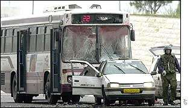
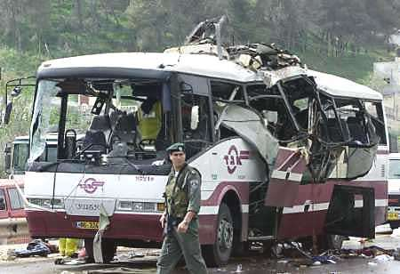
En mettant en ligne ce document pour la première fois, en 2005, j'étais conscient que les clichés de l'horreur qui y figuraient, allaient choquer - tout spécialement nos coreligionnaires qui respectent particulièrement l'image de Dieu dans l'homme (betselem haShem nivra ha'adam). Et je m'étais fait violence en passant outre à cette règle éthique d’origine divine. Mais la coupe était pleine. Un tribunal international venait de ‘rendre l'injustice’ en condamnant un peuple qu'on assassine à abattre le mur qu’il a fait édifier à grands frais pour mettre un terme aux filtrations incessantes d’assassins, et tarir ou au moins juguler les attentats. Alors, puisque les juges de La Haye, faisaient si bon marché de nos morts et mutilés juifs, j'avais jeté dans leur prétoire hypocrite ces clichés d'une barbarie dont ceux qui la perpètrent osent, en s'en targuant, profaner le titre de 'martyr'. Je concluais mon plaidoyer pro domo, par cette menace, qui ne fait peur qu'à celles et ceux qui craignent Dieu, ce qui ne semblait pas être le cas de ces juges d'injustice. Je sais que ces pièces étaient irrecevables devant votre Cour, mais, au tribunal de notre Dieu - elles seront des témoins à charge contre vous, lorsque le Seigneur jugera les juges de la terre pour leur lâcheté et leur hypocrysie. Alors, dira-t-on peut-être, pourquoi exposer à nouveau ces horreurs, qui ne se sont plus reproduites depuis que la population israélienne s'est mise à l'abri derrière le Mur et la Barrière, dite ‘de Sécurité’ - ce qui vaut d’ailleurs à l’Etat d’Israël l’accusation, aussi ridicule qu’ignominieuse, d’apartheid 1 ? Ma réponse est sans ambiguïté: C’est précisément à cause du succès de cette accusation-là, qu’il ne faut plus se taire! (M. Macina).
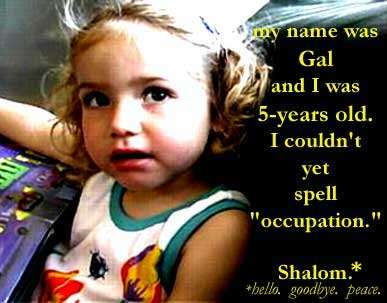
le mot "occupation". Shalom! » * * Mot hébreu qui signifie à la fois: « bonjour », « au revoir » et « paix! ».
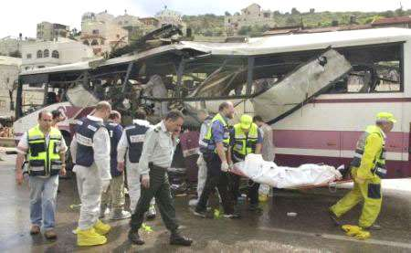
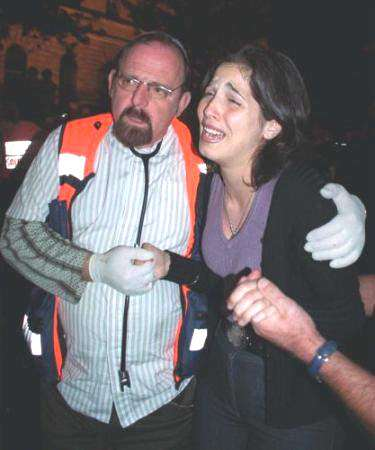
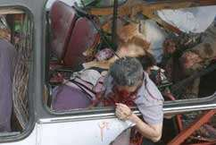
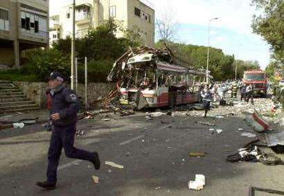
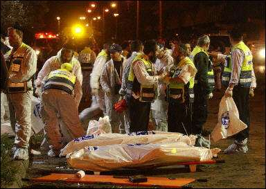
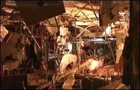
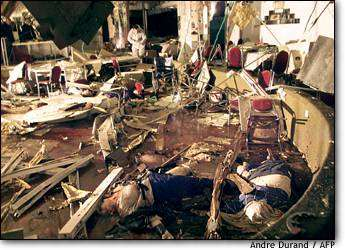
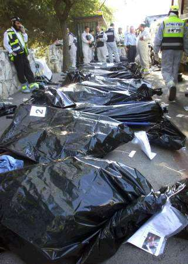
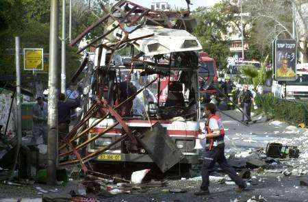
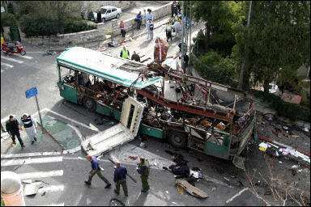
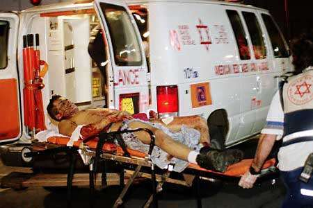
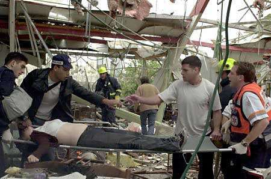
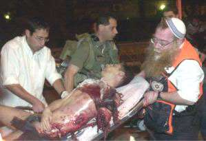
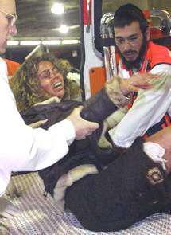
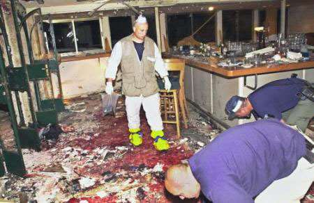
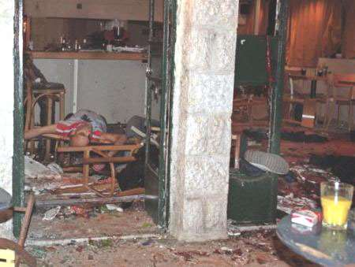
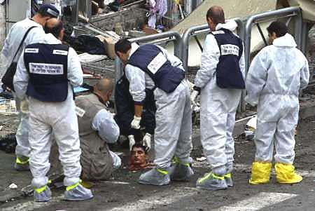
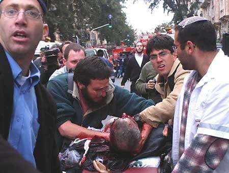


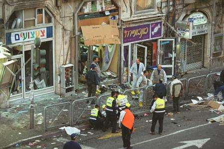
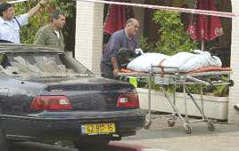
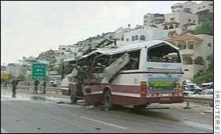
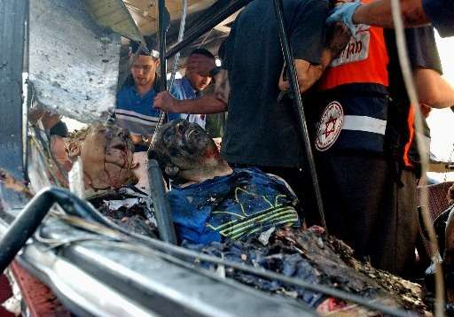
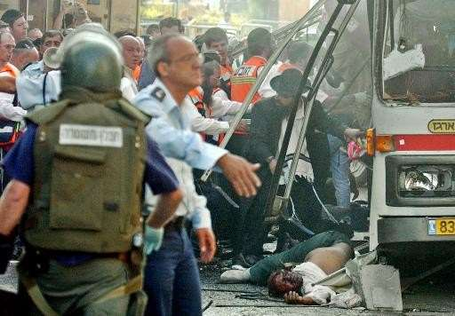
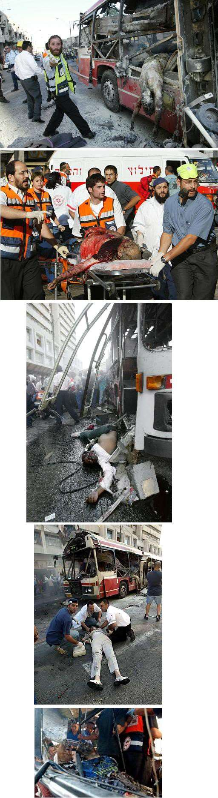
« Je m'appelle Noam Leibowitz. J'avais 7 ans quand j'ai été assassinée, parce que je serais un colon *. C'est même pas vrai! » ** * C'est ainsi que la nommait le présentateur de la "Voix de la Palestine", Nizar al-Ghul, le 18 juin 2003, dans son bulletin d'information de 7h 30: « …mort par balles d'un colon israélien de sexe féminin » (en arabe: "Maqtal 'ala rasass mustawtinna isra'iliyya"). Voir notre article [Lien mort]. ** La famille de Noam - Z'L - vit dans le village religieux pour la jeunesse, Yamin Ord, situé dans le nord d'Israël, près de Haïfa, région qui est tout sauf une colonie.
Je conseille à celles et ceux qui seraient tentés de justifier les actes des terroristes palestiniens d’alorrs de visionner le podcast de l’interview de la Palestinienne qui remit au terroriste suicide l’étui de guitare bourré d’explosifs qui fit exploser le café Sbarro. La séquence est intitulée « La terroriste du Sbarro se confesse» Infolive.tv sur Dailymotion). En réalité, il eût fallu titrer « La terroriste jubile et se vante du massacre… »
(Les soldats de Tsahal traités par le MDA ne sont pas inclus dans ces chiffres.) Note: Cette liste inclut également 6 Israéliens tués à l’étranger dans des actes terroristes ayant pris spécidiquement pour cibles en tant que tels, ainsi que 3 membres du personnel diplomatique américain tués à Gaza.
Liste des victimes par date (texte anglais): Sept 27, 2000 - Sgt. David Biri, 19, of Jerusalem, was fatally wounded in a bombing near Netzarim in the Gaza Strip. Sept 29, 2000 - Border Police Supt. Yosef Tabeja, 27, of Ramle was shot to death by his Palestinian counterpart on a joint patrol near Kalkilya. Oct 1, 2000 - Border Police Cpl. Madhat Yusuf, 19, of Beit Jann, died of gunshot wounds sustained in a gun battle with Palestinians at Joseph's Tomb in Nablus. Oct 2, 2000 - Wichlav Zalsevsky, 24, of Ashdod, was shot in the head in the village of Masha on the trans-Samaria highway. Sgt. Max Hazan, 20, of Dimona, died of gunshot injuries sustained near Beit Sahur. Oct 8, 2000 - The bullet-riddled body of Hillel Lieberman, 36, of Elon Moreh was found at the southern entrance to Nablus. Oct 12, 2000 - First Cpl. Yosef Avrahami and First Sgt. Vadim Novesche, 33, two reserve IDF soldiers, were lynched by a Palestinian mob at the police building in Ramallah. Oct 19, 2000 - Rabbi Binyamin Herling, 64, of Kedumim, was killed when Fatah members and Palestinian security forces opened fire on a group of Israeli men, women, and children on a trip at Mount Ebal near Nablus. Oct 28, 2000 - The body of Marik Gavrilov, 25, of Bnei Aysh was found inside his burned-out car, between the village of Bitunia and Ramallah. Oct 30, 2000 - Eish-Kodesh Gilmor, 25, of Mevo Modi'in, was shot and killed while on duty as a security guard at the National Insurance Institute's East Jerusalem branch. Another guard was injured. Amos Machlouf, 30, of the Gilo neighborhood in Jerusalem, was found murdered in a ravine near Beit Jala. Nov 1, 2000 - Lt. David-Hen Cohen, 21, of Karmiel and Sgt. Shlomo Adshina, 20, of Kibbutz Ze'elim were killed in a shooting incident in the Al-Hader area, near Bethlehem. Nov 1, 2000 - Maj. (res.) Amir Zohar, 34, of Jerusalem was killed in the Nahal Elisha settlement in the Jordan Valley while on active reserve duty.
Nov 2, 2000 - Ayelet Shahar Levy, 28, and Hanan Levy, 33, were killed in a car bomb explosion near the Mahane Yehuda market in Jerusalem. 10 people were injured in the blast. The Islamic Jihad claimed responsibility for the attack. Nov 8, 2000 - Noa Dahan, 25, of Moshav Mivtahim in the south, was shot to death while driving to her job at the Rafah border crossing in Gaza. Nov 10, 2000 - Sgt. Shahar Vekret, 20, of Lod was fatally shot by a Palestinian sniper near Rachel's Tomb at the entrance to Bethlehem. Nov 11, 2000 - Sgt. 1st Class Avner Shalom, 28, of Eilat, was killed in a shooting attack at the Gush Katif junction in the Gaza Strip. Nov 13, 2000 - Sarah Leisha, 42, of Neveh Tzuf was killed by gunfire from a passing car while travelling near Ofra, north of Ramallah. Cpl. Elad Wallenstein, 18, of Ashkelon, and Cpl. Amit Zanna, 19, of Netanya were killed by gunfire from a car passing the military bus carrying them near Ofra. Nov 13, 2000 - Gabi Zaghouri, 36, of Netivot was killed by gunfire directed at the truck he was driving near the Kissufim junction in the southern part of the Gaza Strip. Nov 18, 2000 - St.-Sgt. Baruch (Snir) Flum, 21, of Tel-Aviv was shot and killed by a senior Palestinian Preventive Security Service officer who infiltrated the Kfar Darom greenhouses in the Gaza Strip. St.-Sgt. Sharon Shitoubi, 21, of Ramle, wounded in the Palestinan shooting attack in Kfar Darom, died of his wounds on Nov 20. Nov 20, 2000 - Miriam Amitai, 35, and Gavriel Biton, 34, both of Kfar Darom, were killed when a roadside bomb exploded alongside a bus carrying children from Kfar Darom to school in Gush Katif. Nine others, including 5 children, were injured. Nov 21, 2000 - Itamar Yefet, 18, of Netzer Hazani died from a gunshot wound to the head by Palestinian sniper fire at the Gush Katif junction. Nov 22, 2000 - Shoshana Reis, 21, of Hadera, and Meir Bahrame, 35, of Givat Olga, were killed, and 60 wounded when a powerful car bomb was denotated alongside a passing bus on Hadera's main street, when the area was packed with shoppers and people driving home from work. 60 were wounded in the blast. Nov 23, 2000 - Lt. Edward Matchnik, 21, of Beersheba, was killed in an explosion at the District Coordination Office near Gush Katif in the Gaza Strip. (The joint DCOs were established at the borders of Palestinian-ruled areas under the interim peace accords and were responsible for coordinating security and humanitarian cooperation.) Nov 23, 2000 - Sgt. Samar Hussein, 19, of Hurfeish, was killed when Palestinian snipers opened fire at soldiers patrolling the border fence near the Erez crossing. Nov 24, 2000 - Maj. Sharon Arameh, 25, of Ashkelon was killed by Palestinian sniper fire in fighting near Neve Dekalim in the Gaza Strip. Nov 24, 2000 - Ariel Jeraffi, 40, of Petah Tikva, a civilian employed by the IDF, was killed by Palestinian fire as he travelled near Otzarin in the West Bank.
Dec 8, 2000 - Rina Didovsky, 39, a Beit Hagai school teacher on her way to work, and Eliyahu Ben-Ami, 41, of Otniel, the driver of the van, were killed when a car full of gunmen opened fire on the van near Kiryat Arba. Dec 8, 2000 - Sgt. Tal Gordon, 19, was killed when gunmen in a passing car opened fire on an Egged bus traveling south from Tiberias to Jerusalem on the Jericho bypass road. Dec 21, 2000 - Eliahu Cohen, 29, of Modi'in was shot and killed tonight by Palestinian terrorists waiting in ambush on the road between Givat Ze'ev and Beit Horon. Dec 28, 2000 - Capt. Gad Marasha, 30, of Kiryat Arba and Border Police Sgt.-Maj. Yonatan Vermullen, 29, of Ben-Shemen, were killed when called to dismantle a road- side bomb near the Sufa crossing in the Gaza Strip. The bomb was dismantled, but another bomb exploded, killing both and injuring two other soldiers. The Islamic Jihad claimed responsibility for the attack. Dec 31, 2000 - Binyamin Zeev Kahane, the son of the late right-wing leader Meir Kahane, and his wife, Talia, were killed when Palestinian snipers opened fire while they were driving on the Ramallah bypass road. Five of their children, aged two months to 10 years, were injured. Jan 5, 2001 - The body of Mordechai Cohen, 34, of Hadera was found in the Caesarea industrial area. Jan 14, 2001 - The bullet-ridden body of Ron Tzalah, 32, of Kfar Yam in Gush Katif, apparently killed on Sunday night (Jan 14), was found the following morning near the Kfar Yam hothouses. Jan 17, 2001 - Ofir Rahum, 16, of Ashkelon, traveled to Jerusalem to meet a young woman with whom he had conducted a relationship over the Internet. She then drove him toward Ramallah. At a prearranged location, another vehicle drove up and three Palestinian gunmen inside shot Rahum more than 15 times. One terrorist drove off with Rahum's body and dumped it, while the others fled in the second vehicle. Jan 23, 2001 - Motti Dayan, 27, and Etgar Zeituny, 34, cousins from Tel Aviv, were abducted from a restaurant in Tulkarem by masked Palestinian gunmen and executed. Jan 25, 2001 - Akiva Pashkos, 45, of Jerusalem, was shot dead in a terror attack near the Atarot industrial zone north of Jerusalem. Jan 29, 2001 - Arye Hershkowitz, 55, of Ofra, was killed by shots fired from a passing car near the Rama junction north of Jerusalem. Feb 1, 2001 - Dr. Shmuel Gillis, 42, of Carmei Tzur, was killed by Palestinian gunmen who fired at his car near the Aroub refugee camp on the Jerusalem-Hebron highway. Feb 1, 2001 - Lior Attiah, 23, of Afula was shot to death by terrorists while traveling near Jenin. Feb 5, 2001 - St.-Sgt. Rujayah Salameh, 23, was killed by sniper fire near Rafah.
Feb 11, 2001 - Tzachi Sasson, 35, of Kibbutz Rosh Tzurim in Gush Etzion, was shot and killed by Palestinian gunmen as he drove home from Jerusalem. Feb 14, 2001 - Simcha Shitrit, 30, of Rishon Lezion; Staff-Sgt. Ofir Magidish, 20, of Kiryat Malachi; Sgt. David Iluz, 21, of Kiryat Malachi; Sgt. Julie Weiner, 21, of Jerusalem; Sgt. Rachel Levi, 19, of Ashkelon; Sgt. Kochava Polanski, 19, of Ashkelon; Cpl. Alexander Manevich, 18, of Ashkelon; and Cpl. Yasmin Karisi, 18, of Ashkelon were killed when a bus driven by a Palestinian terrorist plowed into a group of soldiers and civilians waiting at a bus stop near Holon, south of Tel-Aviv. In addition, 25 people were injured in the attack. Feb 26, 2001 - The body of Mordechai Shefer, 55, of Kfar Sava, was found in an olive grove near Moshav Hagor. An autopsy revealed that he was murdered. Investigators suspect terrorist motives. Mar 1, 2001 - Claude Knap, 29, of Tiberias was killed and 9 people injured when a terrorist detonated a bomb in a Tel Aviv to Tiberias service taxi at the Mei Ami junction in Wadi Ara. Mar 4, 2001 - Naftali Dean, 85, of Tel Mond; his niece, Shlomit Ziv, 58, of Netanya; and Yevgenya Malchin, 70, of Netanya were killed in a suicide bombing in downtown Netanya; 60 people were injured. The Hamas claimed responsibility for the attack. Mar 19, 2001 - Baruch Cohen, 59, of Efrat, was killed by shots fired at his car while driving to work in Jerusalem from his home in the Gush Etzion area. After being hit by bullets, he lost control of the car and collided with an oncoming truck. Mar 26, 2001 - Shalhevet Pass, age 10 months, was killed by sniper fire at the entrance to the Avraham Avinu neighborhood in Hebron. Mar 28, 2001 - Eliran Rosenberg-Zayat, 15, of Givat Shmuel and Naftali Lanzkorn, 13, of Petah Tikva were killed in a suicide bombing at the Mifgash Hashalom ("peace stop") gas station several hundred meters from an IDF roadblock near the entrance to Kalkilya, east of Kfar Saba. Four people were injured. Hamas claimed responsibility for the attack. Apr 1, 2001 - Staff Sgt. Ya'akov Krenschel, 23, of Nahariya, an IDF reserve soldier, was killed in a firefight between army and Palestinian forces southeast of Nablus. Apr 1, 2001 - Dina Guetta, 42, of Haifa, was stabbed to death on Ha'atzmaut Street. Her murder was the initiation rite into a terrorist cell apprehended in July. Apr 2, 2001 - Sgt. Danny Darai, 20, of Arad, was killed by a Palestinian sniper after completing guard duty at Rachel's Tomb at the entrance to Bethlehem. Apr 21, 2001 - The mutilated body of Stanislav Sandomirsky, 38, of Beit Shemesh, was found in the trunk of his car near a village north of Ramallah late last night. Terrorist motives are suspected. Apr 22, 2001 - Dr. Mario Goldin, 53, of Kfar Sava, was killed when a terrorist detonated a powerful bomb he was carrying near a group of people waiting at a bus stop on the corner of Weizman and Tchernichovsky streets. About 60 people were injured in the blast. Hamas claimed responsibility. Apr 28, 2001 - Sgt. Shlomo Elmakias, 20, of Netanya, was killed and four women passengers wounded in a drive-by terrorist shooting attack on the Wadi Ara highway in the Galilee. Apr 28, 2001 - Simcha Ron, 60, of Nahariya, was found stabbed to death in Kfar Ba'aneh, near Carmiel in the Galilee. The terrorists responsible for the attack were apprehended in July. May 1, 2001 - Assaf Hershkowitz, 30, of Ofra, was killed when his vehicle was fired upon and overturned at a junction between Ofra and Beit El. May 8, 2001 - Arnaldo Agranionic, 48, was murdered by terrorists as he guarded the Binyamin Farm, a lonely outpost where he lived, on an isolated hilltop east of Itamar in Samaria. May 9, 2001 - Yossi Ish-Ran, 14, and Kobi Mandell, 14, both of Tekoa, were found stoned to death in a cave about 200 meters from the small community south of Jerusalem where they lived. May 10, 2001 - Constantin Straturula, 52, and Virgil Martinesc, 29, two Romanian citizens employed by an Israeli contractor, were killed in a bomb attack while repairing a vandalized fence at the Kissufim Crossing into the Gaza District. May 15, 2001 - Idit Mizrahi, 20, of Rimonim, was fatally shot in a terrorist ambush as she drove with her father and brother on the Alon Highway to attend a family wedding. Terrorists fired 30 bullets, 19 of which hit the family's car. May 18, 2001 - Tirza Polonsky, 66, of Moshav Kfar Haim; Miriam Waxman, 51, of Hadera; David Yarkoni, 53, of Netanya; Yulia Tratiakova, 21, of Netanya; and Vladislav Sorokin, 34, of Netanya were killed in a suicide bombing at Hasharon Mall in the seaside city of Netanya, in which over 100 were wounded. Hamas claimed responsibility for the attack. May 18, 2001 - Lt. Yair Nebenzahl, 22, of Neve Tzuf (Halamish), was killed and his mother seriously wounded, in a Palestinian roadside ambush north of Jerusalem. May 23, 2001 - Asher Iluz, 33, of Modi'in was killed outside Ariel en route to supervise a road paving in the area, when Palestinian gunmen opened fire in an ambush. May 25, 2001 - The burnt body of Yosef Alfasi, 50, of Rishon Letzion, was discovered near the West Bank city of Tulkarem. May 29, 2001 - Gilad Zar, 41, of Itamar, was shot dead in a terrorist ambush while driving in the West Bank between Kedumim and Yizhar. The Fatah Tanzim claimed responsibility for the attack. May 29, 2001 - Sara Blaustein, 53, and Esther Alvan, 20, of Efrat, were killed in a drive- by shooting near Neve Daniel in the Gush Etzion bloc south of Jerusalem. The Fatah Tanzim claimed responsibility for the attack.
May 31, 2001 - Zvi Shelef, 63, of Mevo Dotan, was killed in a drive-by shooting attack in northern Samaria north of Tulkarem. He was shot in the head and died en route to hospital. June 1, 2001 - Marina Berkovizki, 17, of Tel Aviv; Roman Dezanshvili, 21, of Bat Yam; Ilya Gutman, 19, of Bat Yam; Anya Kazachkov, 16, of Holon; Katherine Kastaniyada- Talkir, 15, of Ramat Gan; Aleksei Lupalu, 16, of the Ukraine; Mariana Medvedenko, 16, of Tel Aviv; Irina Nepomneschi, 16, of Bat Yam; Yelena Nelimov, 18, of Tel Aviv; Yulia Nelimov, 16, of Tel Aviv; Raisa Nimrovsky, 15, of Netanya; Pvt. Diez (Dani) Normanov, 21, of Tel Aviv; Simona Rodin, 18, of Holon; Ori Shahar, 32, of Ramat Gan; Liana Sakiyan, 16, of Tel Aviv; Maria Tagilchev, 14, of Netanya; and Irena Usdachi, 18, of Holon were killed when a suicide bomber blew himself outside a disco near Tel Aviv's Dolphinarium along the seafront promenade just before midnight on Friday. Sergei Pancheskov, 20, of the Ukraine; Yael-Yulia Sklianik, 15, of Holon; Jan Bloom, 25, of Ramat Gan; and Yevgenia Dorfman, 15, of Bat Yam died subsequently from their injuries. 120 people were wounded in the bombing. June 11, 2001 - Yehuda Shoham, aged 5 months, of Shilo, died of injuries incurred in a fatal stoning on June 5. He was critically injured by a rock thrown at the family's car near Shilo in Samaria. June 12, 2001 - Father Georgios Tsibouktzakis, 34, a Greek Orthodox monk from the St. George Monastery in Wadi Kelt in the Judean desert, was shot and killed while driving on the Jerusalem-Ma'ale Adumim road. June 14, 2001 - Lt.Col. Yehuda Edri, 45, of Ma'ale Adumim was killed by a Palestinian informant for Israeli intelligence in a shooting attack on the Bethlehem bypass tunnel road connecting the Gush Etzion bloc with Jerusalem. One of his security guards was seriously injured. June 18, 2001 - Dan Yehuda, 35, of Homesh was killed in a drive-by shooting attack between Homesh and Shavei Shomron, near Nablus. Alex Briskin, 17, was moderately injured. June 18, 2001 - Doron Zisserman, 38, of Einav, was shot and killed in his car by sniper fire near the entrance to Einav, east of Tulkarem. Fatah claimed responsibility for the attack. June 20, 2001 - Ilya Krivitz, 62, of Homesh in Samaria was shot and killed at close range in an ambush late Wednesday afternoon in the nearby Palestinian town of Silat a-Dahar. June 22, 2001 - Sgt. Aviv Iszak, 19, of Kfar Saba, and Sgt. Ofir Kit, 19, of Jerusalem, were killed in a suicide bombing near Dugit in the Gaza Strip as a jeep with yellow Israeli license plates, supposedly stuck in the sand, blew up as they approached. June 28, 2001 - Ekaterina (Katya) Weintraub, 27, of Ganim in northern Samaria was killed and another woman injured late Thursday afternoon by shots fired at the two- car convoy on the Jenin bypass road. July 2, 2001 - Aharon Obadyan, 41, of Zichron Ya'akov was shot and killed near Baka a- Sharkia, north of the West Bank city of Tulkarem and close to the 1967 Green Line border, after shopping at the local market. July 2, 2001 - The body of Yair Har Sinai, 51, of Susiya in the Hebron hills, missing since Monday (July 2) was found early Tuesday morning shot in the head and chest. July 4, 2001 - Eliahu Na'aman, 32, of Petah Tikva, was shot at point-blank range just inside the Green Line at Sueika, near Tulkarem. July 9, 2001 - Capt. Shai Shalom Cohen, 22, of Pardes Hanna, was killed and another soldier was wounded when an explosive charge detonated beneath their jeep after leaving the Adoraim IDF base south of Hebron. July 13, 2001 - Yehezkel (Hezi) Mualem, 49, father of four from Kiryat Arba, was shot and killed between Kiryat Arba and Hebron while protesting a shooting attack in the area the previous day. July 14, 2001 - David Cohen, 28, of Betar Illit, died of injuries sustained in a drive-by shooting in Kiryat Arba on July 12. July 16, 2001 - Cpl. Hanit Arami, 19, and St.Sgt. Avi Ben Harush, 20, both of Zichron Yaakov, were killed and 11 wounded - 3 seriously - when a bomb exploded in a suicide terrorist attack at a bus stop near the train station in Binyamina, halfway between Netanya and Haifa, at about 19:30 Monday evening. The Islamic Jihad claimed responsibility for the attack. July 24, 2001 - The body of Yuri Gushchin, 18, of Jerusalem, brutally murdered, bearing stab and gunfire wounds, was found in Ramallah. July 26, 2001 - Ronen Landau, 17, of Givat Ze'ev, was shot and killed by Palestinian terrorists while returning home from Jerusalem with his father. Aug 5, 2001 - Tehiya Bloomberg, 40, of Karnei Shomron, mother of five and 5 months pregnant, was killed when Palestinian gunmen opened fire on the family vehicle between Alfei Menashe and Karnei Shomron. Three people were seriously wounded, including her husband, Shimon, and daughter, Tzippi, 14. Aug 6, 2001 - Yitzhak Snir, 51, of Ra'anana, an Israeli diamond merchant, was shot dead in Amman, in the yard of the building where he kept a flat. His body was found the following morning. Aug 7, 2001 - Wael Ghanem, 32, an Arab Israeli resident of Taibeh, was shot and killed by Palestinian assailants on the road near Kalkilya. Police believe he was murdered because of suspected collaboration with Israeli authorities. Zohar Shurgi, 40, of Moshav Yafit in the Jordan Valley, was shot and killed by terrorists while driving home at night on the Trans-Samaria Highway. Aug 9, 2001 - Giora Balash, 60, of Brazil; Zvika Golombek, 26, of Carmiel; Shoshana Yehudit Greenbaum, 31, of the U.S.; Tehila Maoz, 18, of Jerusalem; Frieda Mendelsohn, 62, of Jerusalem; Michal Raziel, 16, of Jerusalem; Malka Roth, 15, of Jerusalem; Mordechai Schijveschuurder, 43, of Neria; Tzira Schijveschuurder, 41, of Neria; Ra'aya Schijveschuurder, 14, of Neria; Avraham Yitzhak Schijveschuurder, 4, of Neria; Hemda Schijveschuurder, 2, of Neria; Lily Shimashvili, 33, of Jerusalem; Tamara Shimashvili, 8, of Jerusalem; and Yocheved Shoshan, 10, of Jerusalem were killed and about 130 injured in a suicide bombing at the Sbarro pizzeria on the corner of King George Street and Jaffa Road in the center of Jerusalem. Hamas and the Islamic Jihad claimed responsibility for the attack. Aug 9, 2001 - Aliza Malka, 17, a boarding student at Kibbutz Merav, was killed by terrorists in a drive-by shooting at the entrance to the kibbutz in the Gilboa region, west of Beit She'an. Three teenage girls who were with her in the car were injured, one seriously. Aug 25, 2001 - Maj. Gil Oz, 30, of Kfar Sava; St.-Sgt. Kobi Nir, 21, of Kfar Sava; and Sgt. Tzahi Grabli, 19 of Holon were killed and seven soldiers wounded when two Palestinian terrorists infiltrated an IDF base in Gush Katif in the Gaza Strip at about 3:00 AM Saturday morning. The attackers, members of the PLO Fatah faction and of the Palestinian security forces, were killed by IDF soldiers. The Democratic Front claimed responsibility for the attack. Aug 25, 2001 - Sharon, 26, and Yaniv Ben-Shalom, 27, of Ofarim, were killed when Palestinian gunmen opened fire on their car as they were returning home on the Jerusalem-Modi'in on road Saturday night. Their children, aged one and two, were lightly wounded. Sharon's brother, Doron Sviri, 20, of Jerusalem was fatally wounded and died the following day. Aug 26, 2001 - Dov Rosman, 58, of Netanya was killed in a shooting attack shortly before 17:00 on Sunday afternoon near the entrance to the village of Zaita, opposite Kibbutz Magal. Fatah claimed responsibility for the attack. Aug 27, 2001 - Meir Lixenberg, 38, of Itamar, father of five, was shot and killed by Palestinian terrorists from a roadside ambush while traveling between the communities of Har Bracha and Itamar, south of Nablus. Aug 29, 2001 - Oleg Sotnikov, 35, of Ashdod, a truck driver employed by Dor Energy, was killed in a terrorist shooting attack outside the Palestinian village of Kutchin, west of Nablus. Aug 30, 2001 - Amos Tajouri, 60, of Modi'in, was shot in the head at point-blank range by a masked gunman in the Arab village of Na'alin, while dining at a restaurant owned by close friends. Sept 6, 2001 - Lt. Erez Merhavi, 23, of Moshav Tarum was killed in an ambush shooting near Kibbutz Bahan, east of Hadera, while driving to a wedding. A female officer with him in the car was seriously injured. Fatah-Tanzim claimed responsibility for the attack. Sept 9, 2001 - Ya'akov Hatzav, 42, of Hamra in the Jordan Valley, the driver, and Sima Franko, 24, of Beit She'an, a kindergarten teacher, were killed in a shooting attack 300 meters south of the Adam Junction in the Jordan Valley. A minibus transporting teachers to the regional school was attacked by Palestinian terrorists. Sept 9, 2001 - Dr. Yigal Goldstein, 47, of Jerusalem; Morel Derfler, 45, of Mevasseret Zion; and Sgt. Daniel Yifrah, 19, of Jerusalem were killed and some 90 injured, most lightly, in a suicide bombing near the Nahariya train station in northern Israel. Sept 11, 2001 - Border Policemen Sgt. Tzachi David, 19, of Tel-Aviv, and St.-Sgt. Andrei Zledkin, 26, of Carmiel, were killed just after midnight when Palestinian gunmen opened fire on the Ivtan Border Police base near Kibbutz Bachan in central Israel. A Fatah group claimed responsibility for the attack. Sept 12, 2001 - Ruth Shua'i, 46, of Alfei Menashe, was traveling home around 19:30 PM when shots were fired from a passing vehicle near the village of Habla near Kalkilya. She sustained injuries to her head and stomach and died en route to Meir Hospital in Kfar Saba. Sept 15, 2001 - Meir Weisshaus, 23, of Jerusalem, was fatally shot late Saturday night in a drive-by shooting on the Ramot-French Hill road in northern Jerusalem. Sept 16, 2001 - Sgt. David Gordukal, 23, of Upper Nazareth, was killed in the exchange of fire on Saturday night in the south of Ramallah, during which five senior Palestinian terrorists were arrested and a number of Palestinian positions and a Force 17 camp were attacked. Sept 20, 2001 - Sarit Amrani, 26, of Nokdim, was killed Thursday morning and her husband Shai was seriously wounded in a shooting attack near Tekoa, south of Bethlehem. The couple's three children who were traveling in the vehicle were not injured. Fatah claimed responsibility for the attack. Sept 24, 2001 - Salit Sheetrit, 28, of Kibbutz Sde Eliyahu was killed by gunfire shortly after 6:30 near Shadmot Mehola on the Jordan Valley road. The Islamic Jihad claimed responsibility for the attack. Sept 26, 2001 - Zvia Pinhas, 64, of Moshav Maor was stabbed to death in her home. The terrorist who carried out the attack, from Jenin, was arrested. Oct 2, 2001 - Cpl. Liron Harpaz, 19, of Alei Sinai, and Assaf Yitzhaki, 20, of Lod, were killed when a Palestinian terrorist cell infiltrated the northern Gaza District community of Alei Sinai, opening fire on residents and hurling grenades into homes. 15 others were wounded in the attack. Oct 4, 2001 - Sgt. Tali Ben-Armon, 19, an off-duty woman soldier from Pardesia, Haim Ben-Ezra, 76, of Givat Hamoreh, and Sergei Freidin, 20, of Afula were killed when a Palestinian terrorist, dressed as an Israeli paratrooper, opened fire on Israeli civilians waiting at the central bus station in Afula. 13 other Israelis were wounded in the attack. Fatah claimed responsibility for the attack. Oct 5, 2001 - Hananya Ben-Avraham, 46, of Elad was killed by Palestinian terrorists in a machine gun ambush near Avnei Hefetz in central Israel. Oct 7, 2001 - Yair Mordechai, 43, of Kibbutz Sheluhot was killed when a Palestinian suicide terrorist detonated a large bomb strapped to his body near the entrance of the kibbutz in the Beit She'an Valley. Oct 17, 2001 - Tourism Minister Rechavam Ze'evy, 75, was assassinated by two shots to the head outside his room at the Jerusalem Hyatt Hotel. The Popular Front for the Liberation of Palestine claimed responsibility for the attack. Oct 18, 2001 - Lior Kaufman, 30, of Ramat Sharon was killed and two injured, one seriously, by shots fired by terrorists at their jeep in the Judean desert, near the Mar Saba monastery. Oct 28, 2001 - St.-Sgt. Yaniv Levy, 22, of Zichron Yaakov was killed by Palestinian terrorists in a drive-by machine-gun ambush near Kibbutz Metzer in northern Israel. The Tanzim wing of Arafat's Fatah faction claimed responsibility for the murder. Oct 28, 2001 - Ayala Levy, 39, of Elyachin; Smadar Levy, 23, of Hadera; Lydia Marko, 63, of Givat Ada; and Sima Menahem, 30, of Zichron Yaakov were killed when two Palestinian terrorists, members of the Palestinian police, armed with assault rifles and expanding bullets, opened fire from a vehicle on Israeli pedestrians at a crowded bus- stop in downtown Hadera. About 40 were wounded, three critically. The Islamic Jihad claimed responsiblity for the attack. Nov 2, 2001 - St.-Sgt. Raz Mintz, 19, of Kiryat Motzkin was killed by Palestinian gunmen 5:45 P.M. on Friday at an IDF roadblock at near Ofra, north of Ramallah. The Fatah- affiliated Al-Aksa Brigade claimed responsibility for the attack. Nov 4, 2001 - Shoshana Ben Ishai, 16, of Betar Illit and Menashe (Meni) Regev, 14, of Jerusalem were killed when a Palestinian terrorist opened fire with a sub-machine gun shortly before 16:00 at a No. 25 Egged bus at the French Hill junction in northern Jerusalem. 45 people were injured in the attack. Nov 6, 2001 - Capt. (Res.) Eyal Sela, 39, of Moshav Nir Banim, was shot dead in an ambush by three Palestinian terrorists on the southern Nablus bypass road. Nov 9, 2001 - Hadas Abutbul, 39, of Mevo Dotan in northern Samaria was shot and killed by Palestinian terrorists on Friday afternoon as she drove from work in nearby Shaked. Nov 11, 2001 - Aharon Ussishkin, 50, head of security at Moshav Kfar Hess, east of Netanya, was shot and killed at the entrance to the moshav on Sunday evening, after being summoned to investigate a suspicious person. Nov 24, 2001 - St.-Sgt. Barak Madmon, 26, of Holon, an IDF reservist, was killed by a mortar shell that landed in the soccer field of Kfar Darom in Gush Katif, while on his way to take up guard duty. Hamas claimed responsibility for the attack. Nov 27, 2001 - Noam Gozovsky, 23, of Moshav Ramat Zvi, and Michal Mor, 25, of Afula were killed when two Palestinian terrorists from the Jenin area opened fire with Kalashnikov assault rifles on a crowd of people near the central bus station in Afula. Police officers and a reserve soldier confronted them, killing the terrorists in the ensuing firefight. Another 50 people were injured, 10 of them moderately to seriously. Fatah and the Islamic Jihad claimed joint responsibility. Nov 27, 2001 - Etty Fahima, 45, of Netzer Hazani was killed three others were injured when a Palestinian terrorist threw grenades and opened fire at a convoy on the road between the Kissufim crossing and Gush Katif in the Gaza Strip on Tuesday evening. Hamas claimed responsibility for the attack.
Nov 29, 2001 - 1st Sgt. Yaron Pikholtz, 20, of Ramat Gan, was killed and a second soldier was injured in a drive-by shooting incident on the Green Line, near the West Bank village of Baka el-Sharkiya. Nov 29, 2001 - Inbal Weiss, 22, of Zichron Ya'akov; Yehiav Elshad, 28, of Tel-Aviv; and Samuel Milshevsky, 45, of Kfar Sava were killed and nine wounded in a suicide bombing on an Egged 823 bus en route from Nazereth to Tel Aviv near the city of Hadera. The Islamic Jihad and Fatah claimed responsibility for the attack. Dec 1, 2001 - Assaf Avitan, 15, of Jerusalem; Michael Moshe Dahan, 21, of Jerusalem; Israel Ya'akov Danino, 17, of Jerusalem; Yosef El-Ezra, 18, of Jerusalem; Sgt. Nir Haftzadi, 19, of Jerusalem; Yuri (Yoni) Korganov, 20, of Ma'alei Adumim; Golan Turgeman, 15, of Jerusalem; Guy Vaknin, 19, of Jerusalem; Adam Weinstein, 14, of Givon Hahadasha, and Moshe Yedid-Levy, 19, of Jerusalem were killed and about 180 injured - 17 seriously - when explosive devices were detonated by two suicide bombers close to 11:30 P.M. Saturday night on Ben Yehuda Street, the pedestrian mall in the center of Jerusalem. A car bomb exploded nearby 20 minutes later. Hamas claimed responsibility for the attack. Ido Cohen, 17, of Jerusalem, fatally injured in the attack, died of his wounds on December 8. Dec 2, 2001 - Prof. Baruch Singer, 51, of Gedera was killed when Palestinian gunmen opened fire on his car near the northern Gaza settlement of Elei Sinai. Hamas claimed responsibility for the attack. Dec 2, 2001 - Tatiana Borovik, 23, of Haifa; Mara Fishman, 51, of Haifa; Ina Frenkel, 60, of Haifa; Riki Hadad, 30, of Yokne'am; Ronen Kahalon, 30, of Haifa; Samion Kalik, 64, of Haifa; Mark Khotimliansky, 75, of Haifa; Cecilia Kozamin, 76, of Haifa; Yelena Lomakin, 62, of Haifa; Rosaria Reyes, 42, of the Philippines; Yitzhak Ringel, 41, of Haifa; Rassim Safulin, 78, of Haifa; Leah Strick, 73, of Haifa; Faina Zabiogailu, 64, of Haifa; Mikhail Zaraisky, 71, of Haifa were killed and 40 injured in a suicide bombing on an Egged bus No. 16 in Haifa shortly after 12:00. Hamas claimed responsibility for the attack. Dec 12, 2001 - Yair Amar, 13, of Emmanuel; Esther Avraham, 42, of Emmanuel; Border Police Chief Warrant Officer Yoel Bienenfeld, 35, of Moshav Tel Shahar; Moshe Gutman, 40, of Emmanuel; Avraham Nahman Nitzani, 17, of Betar Illit; Yirmiyahu Salem, 48, of Emmanuel; Israel Sternberg, 46, of Emmanuel; David Tzarfati, 38, of Ginot Shomron; Hananya Tzarfati, 32, of Kfar Saba; Ya'akov Tzarfati, 64, of Kfar Saba were killed when three terrorists attacked a No. 189 Dan bus and several passenger cars with a roadside bomb, anti-tank grenades, and light arms fire near the entrance to Emmanuel in Samaria at 18:00 P.M. About 30 others were injured. Both Fatah and Hamas claimed responsibility for the attack. Haim Chiprot, 52, of Emmanuel, injured in the attack, died of his wounds on March 25, 2002. Dec 17, 2001 - Zion Ohana, 45, of Adam was brutally murdered by three residents of Jaba in Samaria. Dec 25, 2001 - Sgt. Michael Sitbon, 23, of Beit Shemesh, an IDF reserve soldier, was killed, and four other soldiers were injured, in a shooting attack Tuesday morning near the Jordanian border north of Beit She'an. Jan 9, 2002 - Maj. Ashraf Hawash, 28, of Beit Zarzir; Sgt.-Maj. Ibrahim Hamadieh, 23, of Rehaniya; Sgt.-Maj. Hana (Eli) Abu-Ghanem, 25, of Haifa; and St.-Sgt. Mofid Sawaid, 25, of Abu Snan, four IDF soldiers of the Bedouin desert patrol unit, were killed and two injured when two armed Palestinian terrorists from the southern Gaza Strip, carrying explosive belts, assault rifles, grenades, and dressed in Palestinian Authority police uniforms, infiltrated into Israel at 04:30 this morning and attacked an IDF post near Kerem Shalom. The terrorists, one a member of the Palestinian Authority's naval force, and the second a Hamas operative, were killed. Hamas claimed responsibility for the attack. Jan 14, 2002 - Sgt. Elad Abu-Gani, 19, of Tiberias, was killed and an officer sustained gunshot wounds in a terrorist ambush near Kuchin, between Nablus and Tulkarm. Fatah claimed responsibility for the attack. Jan 15, 2002 - Avraham (Avi) Boaz, 71, of Ma'aleh Adumim, an American citizen, was kidnapped at a PA security checkpoint in Beit Jala. His bullet-riddled body was found in a car in Beit Sahur, in the Bethlehem area. The Fatah's Al-Aksa Brigade claimed responsibility for the murder. Jan 15, 2002 - Yoela Chen, 45, of Givat Ze'ev, was shot and killed by Palestinian terrorists near the gas station at the entrance to Givat Ze'ev shortly before 20:00. Her aunt who was with her in the car was injured. The Fatah's Al-Aqsa Brigade claimed responsibility for the murder. Jan 16, 2002 - Shahada Dadis, 30, an Arab resident of Beit Hanina in East Jerusalem, was killed in a drive-by terrorist shooting. He was found dead in a car bearing Israeli license plates south of Jenin in the West Bank. Jan 17, 2002 - Edward Bakshayev, 48, of Or Akiva; Anatoly Bakshayev, 63, of Or Akiva; Aharon Ben Yisrael-Ellis, 32, of Ra'anana; Dina Binayev, 48, of Ashkelon; Boris Melikhov, 56, of Sderot; and Avi Yazdi, 25, of Hadera were killed and 35 injured, several seriously, when a terrorist burst into a bat mitzva reception in a banquet hall in Hadera shortly before 23:00, opening fire with an M-16 assault rifle. The Fatah Al- Aqsa Brigades claimed responsibility for the attack. Jan 22, 2002 - Sarah Hamburger, 79, and Svetlana Sandler, 56, both of Jerusalem, were killed and 40 were injured when a Palestinian terrorist opened fire with an M-16 assault rifle near a bus stop in downtown Jerusalem. The Fatah Al-Aqsa Brigades claimed responsibility for the attack. Jan 27, 2002 - Pinhas Tokatli, 81, of Jerusalem was killed and over 150 people were wounded, four seriously, in a suicide bombing on Jaffa Road, in the center of Jerusalem, shortly before 12:30. The female terrorist, identified as a Fatah member, was armed with more than 10 kilos of explosives. Feb 6, 2002 - Miri Ohana, 45, and her daughter Yael, 11, were murdered in their home when an armed terrorist infiltrated Moshav Hamra, halfway between Jericho and Beit She'an in the Jordan Valley on Wednesday evening, opening fire. IDF reserve soldier, St.-Sgt. Maj.(res.) Moshe Majos Meconen, 33, of Beit She'an, was also killed in the attack. The terrorist, who entered the Ohana home disguised in IDF uniform, was killed by IDF forces. Both Fatah and Hamas claimed responsibility. Feb 8, 2002 - Moranne Amit, 25, of Kibbutz Kfar Hanasi was stabbed to death by four Palestinians, aged 14 to 16, while strolling on the Sherover Promenade in Jerusalem's Armon Hanatziv neighborhood Friday afternoon. Feb 9, 2002 - Atala Lipobsky, 78, of Ma'ale Ephraim was shot dead on Saturday night while driving on the Trans-Samaria Highway with her son. Palestinian gunmen opened fire on the car, apparently from an ambush, between Ariel and the Tapuah Junction. Feb 10, 2002 - Lt. Keren Rothstein, 20, of Ashkelon and Cpl. Aya Malachi, 18, of Moshav Ein Habesor were killed in a drive-by terrorist shooting at the entrance to the IDF Southern Command base in Be'er Sheva. Four others were wounded, one critically. One of the terrorists was killed at the scene; the second, wearing an explosives belt, fled in the direction of a nearby school when he was shot and killed by a soldier and police officer. Hamas claimed responsibility for the attack. Feb 14, 2002 - St.-Sgt. Ron Lavie, 20, of Katzrin, St.-Sgt. Moshe Peled, 20, of Rehovot, and St.-Sgt. Asher Zaguri, 21, of Shlomi were killed and four soldiers injured when a powerful mine exploded under a IDF tank on the Karni-Netzarim road in the Gaza Strip Thursday night, following the detonation of a roadside bomb at a civilian convoy of cars and a bus. Feb 15, 2002 - St.-Sgt. Lee Nahman Akunis, 20, of Holon, was shot and killed by gunmen on Friday night at a roadblock north of Ramallah. The Fatah's Al-Aksa Brigade claimed responsibility for the attack. Feb 16, 2002 - Nehemia Amar, 15, and Keren Shatsky, 15, both of Ginot Shomron were killed and about 30 people were wounded, six seriously, when a suicide bomber blew himself up on Saturday night at a pizzeria in the shopping mall in Karnei Shomron in Samaria. Rachel Thaler, 16, of Ginot Shomron died of her wounds on February 27. The Popular Front for the Liberation of Palestine claimed responsibility for the attack. Feb 18, 2002 - Policeman Ahmed Mazarib, 32, of the Bedouin village Beit Zarzir in the Galilee, was killed by a suicide bomber whom he had stopped for questioning on the Ma'ale Adumim-Jerusalem road. The terrorist succeeded in detonating the bomb in his car. The Fatah al-Aqsa Martyrs Brigades claimed responsibility for the attack. Feb 18, 2002 - Ahuva Amergi, 30, of Ganei Tal in Gush Katif was killed and a 60-year old man was injured when a Palestinian terrorist opened fire on her car. Maj. Mor Elraz, 25, of Kiryat Ata and St.-Sgt. Amir Mansouri, 21, of Kiryat Arba, who came to their assistance, were killed while trying to intercept the terrorist. The terrorist was killed when the explosives he was carrying were detonated. The Fatah al-Aqsa Martyrs Brigades claimed responsibility for the attack. Feb 19, 2002 - Lt. Moshe Eini, 21, of Petah Tikva; St.-Sgt. Benny Kikis, 20, of Carmiel; St.-Sgt. Mark Podolsky, 20, of Tel Aviv; St.-Sgt. Erez Turgeman, 20, of Jerusalem; St.- Sgt. Tamir Atsmi, 21, of Kiryat Ono; and St.-Sgt. Michael Oxsman, 21, of Haifa were killed and one wounded in an attack near a roadblock west of Ramallah. Several terrorists opened fire at soldiers at the roadblock, including three off-duty soldiers inside a structure at the roadblock, killing them at point-blank range. The Fatah al- Aqsa Martyrs Brigades claimed responsibility for the attack.
Feb 21, 2002 - Minhal Dragma, 22, of Baka al-Garbiya, was killed when a terrorist opened fire at IDF soldiers at the entrance to Baka al-Sharkiya. Feb 22, 2002 - Valery Ahmir, 59, of Beit Shemesh was killed by terrorists in a drive-by shooting on the Atarot-Givat Ze'ev road north of Jerusalem as he returned home from work. Fatah claimed responsibility for the attack. Feb 25, 2002 - Avraham Fish, 65, and Aharon Gorov, 46, both of Nokdim, were killed in a terrorist shooting attack between Tekoa and Nokdim, south of Bethlehem. Fish's daughter, 9 months pregnant, was seriously injured but delivered a baby girl. The Fatah al-Aksa Brigades claimed responsibility for the attack. Feb 25, 2002 - Police officer 1st Sgt. Galit Arbiv, 21, of Nesher, died after being fatally shot, when a terrorist opened fire at a bus stop in the Neve Ya'akov residential neighbhorhood in northern Jerusalem. Eight others were injured, two seriously. The Fatah al-Aksa Brigades claimed responsibility for the attack. Feb 27, 2002 - Gad Rejwan, 34, of Jerusalem, was shot and killed early Wednesday morning by one of his Palestinian employees in a factory in the Atarot industrial area, north of Jerusalem. Two Fatah groups issued a joint statement taking responsibility for the murder. Feb 28, 2002 - IDF soldier St.-Sgt. Haim Bachar, 20, of Tel Aviv was killed during clashes with Palestinians in the Balata refugee camp near Nablus. IDF forces entered the camp to search for wanted terrorists. Mar 1, 2002 - IDF soldier Sgt. Ya'acov Avni, 20, of Kiryat Ata was killed by Palestinian sniper fire in the Jenin refugee camp. Mar 2, 2002 - The bullet-ridden body of Jerusalem police detective Chief-Supt. Moshe Dayan, 46, of Ma'aleh Adumim, was discovered next to his trail motorcycle, near the Mar Saba Monastery in the Judean Desert. Tanzim claimed responsibility for the attack. Mar 2, 2002 - Eleven people were killed and over 50 were injured, 4 critically, in a suicide bombing at 19:15 on Saturday evening near a yeshiva in the ultra-Orthodox Beit Yisrael neighborhood in the center of Jerusalem where people had gathered for a bar- mitzva celebration. The terrorist detonated the bomb next to a group of women waiting with their baby carriages for their husbands to leave the nearby synagogue. The victims: Shlomo Nehmad (40), his wife Gafnit (32), and their daughters Shiraz (7) and Liran (3), of Rishon Lezion; Shaul Nehmad (15), of Rishon Lezion; Lidor Ilan (12) and his sister Oriah (18 months), of Rishon Lezion; Tzofia Ya'arit Eliyahu (23) and her son Ya'akov Avraham (7 months), of Jerusalem. Avi Hazan, 37, of Moshav Adora, died of his injuries on Monday morning (Mar 4). Avraham Eliahu Nehmad, 7, of Rishon Lezion, died of his injuries on June 20. The Fatah Al-Aqsa Martyrs Brigade took responsibility for the attack. Mar 3, 2002 - Ten Israelis - 7 soldiers and 3 civilians - were killed and 6 injured when a terrorist opened fire at an IDF roadblock near Ofra in Samaria: Capt. Ariel Hovav, 25, of Eli; Lt.(res.) David Damelin, 29, of Kibbutz Metzar; 1st Sgt.(res.) Rafael Levy, 42, of Rishon Lezion; Sgt.-Maj.(res.) Avraham Ezra, 38, of Kiryat Bialik; Sgt.-Maj.(res.) Eran Gad, 24, of Rishon Letzion; Sgt.-Maj.(res.) Yochai Porat, 26, of Kfar Sava; Sgt.- Maj.(res.) Kfir Weiss, 24, of Beit Shemesh; Sergei Birmov, 33, of Ariel; Vadim Balagula, 32, of Ariel; and Didi Yitzhak, 66, of Eli. The Fatah Al-Aqsa Martyrs Brigade claimed responsibility for the attack. Mar 3, 2002 - Sgt. Steven Kenigsberg, 19, of Hod Hasharon was killed and 4 soldiers injured when a Palestinian gunman opened fire near the Kissufim crossing in the Gaza Strip. The Islamic Jihad and Tanzim claimed responsibility for the attack. Mar 5, 2002 - Police officer FSM Salim Barakat, 33, of Yarka; Yosef Habi, 52, of Herzliya; and Eli Dahan, 53, of Lod were killed and over 30 people were wounded in Tel-Aviv when a Palestinian terrorist opened fire on two adjacent restaurants shortly after 2:00 AM. The Fatah Al-Aqsa Martyrs Brigade claimed responsibility for the attack. Mar 5, 2002 - Devorah Friedman, 45, of Efrat, was killed and her husband injured in shooting attack on the Bethlehem bypass "tunnel road", south of Jerusalem. The Fatah Al-Aqsa Martyrs Brigade claimed responsibility for the attack. Mar 5, 2002 - Maharatu Tagana, 85, of Upper Nazareth was killed and a large number of people injured, most lightly, when a suicide bomber exploded in an Egged No. 823 bus as it entered the Afula central bus station. The Islamic Jihad claimed responsibility for the attack. Mar 6, 2002 - 1st Lt. Pinhas Cohen, 23, of Jerusalem, was killed overnight near the southern Gaza town of Khan Yunis, in the course of anti-terrorist activity. Cpl.(res.) Alexander Nastarenko, 37, of Netanya was killed when Palestinian gunmen crossed the border fence and ambushed an army jeep on the patrol road near Kibbutz Nir Oz. Mar 7, 2002 - Arik Krogliak of Beit El, Tal Kurtzweil of Bnei Brak, Asher Marcus of Jerusalem, Eran Picard of Jerusalem, and Ariel Zana of Jerusalem, all aged 18, were killed and 23 people were injured, four seriously, when a Palestinian gunman penetrated the pre-military training academy in the Gush Katif settlement of Atzmona. Hamas claimed responsibility for the attack. Mar 8, 2002 - St.-Sgt. Edward Korol, 20, of Ashdod, was killed by a Palestinian sniper in Tulkarem. Mar 9, 2002 - Avia Malka, 9 months, of South Africa, and Israel Yihye, 27, of Bnei Brak were killed and about 50 people were injured, several seriously, when two Palestinians opened fire and threw grenades at cars and pedestrians in the coastal city of Netanya on Saturday evening, close to the city's boardwalk and hotels. The terrorists were killed by Israeli border police. The Fatah Al Aqsa Brigades claimed responsibility for the attack. Mar 9, 2002 - Limor Ben-Shoham, 27, of Jerusalem; Nir Borochov, 22, of Givat Ze'ev; Danit Dagan, 25, of Tel-Aviv; Livnat Dvash, 28, of Jerusalem; Tali Eliyahu, 26, of Jerusalem; Uri Felix, 25, of Givat Ze'ev; Dan Imani, 23, of Jerusalem; Natanel Kochavi, 31, of Kiryat Ata; Baruch Lerner, 29, of Eli; Orit Ozerov, 28, of Jerusalem; Avraham Haim Rahamim, 28, of Jerusalem were killed and 54 injured, 10 of them seriously, when a suicide bomber exploded at 22:30 PM Saturday night in a crowded cafe at the corner of Aza and Ben-Maimon streets in the Rehavia neighborhood in the center of Jerusalem. Hamas claimed responsibility for the attack. Mar 10, 2002 - St.-Sgt. Kobi Eichelboim, 21, of Givatayim died Sunday afternoon from wounds suffered in the morning when a Palestinian gunman disguised as a worker opened fire at the entrance to Netzarim in the Gaza Strip. Mar 12, 2002 - Eyal Lieberman, 42, of Tzoran was killed and another person was wounded in a shooting attack at the Kiryat Sefer checkpoint, east of Modi'in. Mar 12, 2002 - Yehudit Cohen, 33, of Shlomi; Ofer Kanarick, 44, of Moshav Betzet; Alexei Kotman, 29, of Kibbutz Beit Hashita; Lynne Livne, 49, and her daughter Atara, 15, of Kibbutz Hanita; and Lt. German Rozhkov, 25, of Kiryat Shmona were killed when two terrorists opened fire from an ambush on Israeli vehicles traveling between Shlomi and Kibbutz Metzuba near the northern border with Lebanon. Seven others were injured. Israeli forces killed the two gunmen, who were dressed in IDF uniforms, and carried out wide-scale searches for additional terrorists. Mar 13, 2002 - Lt. Gil Badihi, 21, of Nataf died of injuries suffered Wednesday morning in Ramallah. He was shot in the head by a Palestinian gunman as he stood next to his tank. Mar 14, 2002 - St.-Sgt. Matan Biderman, 21, of Carmiel, St.-Sgt. Ala Hubeishi, 21, of Julis, and Sgt. Rotem Shani, 19, of Hod Hasharon were killed and two soldiers were injured early Thursday morning when a tank escorting a civilian convoy drove over a land mine exploded on the Karni-Netzarim road in the Gaza Strip. Terrorists hiding in a nearby mosque detonated the remote-controlled explosive charge beneath the armored vehicle. The Democratic Front for the Liberation of Palestine and the Fatah's al-Aksa Martyrs Brigade both claimed responsibility. Mar 17, 2002 - Noa Auerbach, 18, of Kfar Sava was killed and 16 people were injured when a terrorist opened fire on passersby in the center of Kfar Sava. The gunman was shot and killed by police. Mar 19, 2002 - 1st Lt. Tal Zemach, 20, of Kibbutz Hulda, was killed and three soldiers were injured when Palestinian terrorists opened fire on them in the Jordan Valley. Hamas claimed responsibility for the attack. Mar 20, 2002 - Sgt. Michael Altfiro, 19, of Pardes Hanna; St.-Sgt. Shimon Edri, 20, of Pardes Hanna; SWO Meir Fahima, 40, of Hadera; Cpl. Aharon Revivo, 19, of Afula; Alon Goldenberg, 28, of Tel Aviv; Mogus Mahento, 75, of Holon; and Bella Schneider, 53, of Hadera were killed and about 30 people were wounded, several seriously, in a suicide bombing of an Egged bus No. 823 traveling from Tel Aviv to Nazareth at the Musmus junction on Highway 65 (Wadi Ara) near Afula. The Islamic Jihad claimed responsibility for the attack. Mar 21, 2002 - Gadi (34) and Tzipi (29) Shemesh, of Jerusalem and Yitzhak Cohen, 48, of Modi'in were killed and 86 people injured, 3 of them seriously, in a suicide bombing on King George Street in the center of Jerusalem. The terrorist detonated the bomb, packed with metal spikes and nails, in the center of a crowd of shoppers. The Fatah al- Aqsa Brigades claimed responsibility for the attack. Mar 24, 2002 - Esther Kleiman, 23, of Neve Tzuf, was killed in a shooting attack northwest of Ramallah, while traveling to work in a reinforced Egged bus. Mar 24, 2002 - Avi Sabag, 24, of Otniel was killed in a terrorist shooting south of Hebron. Mar 26, 2002 - Major Cengiz Soytunc of Turkey and Catherine Berruex of Switzerland, members of the TIPH observer force in Hebron, were killed in an ambush shooting by a Palestinian gunman near Halhul. Mar 27, 2002 - 30 people were killed and 140 injured - 20 seriously - in a suicide bombing in the Park Hotel in the coastal city of Netanya, in the midst of the Passover holiday seder with 250 guests. Hamas claimed responsibility for the attack. The victims: Shula Abramovitch, 63, of Holon; David Anichovitch, 70, of Netanya; Sgt.- Maj. Avraham Beckerman, 25, of Ashdod; Shimon Ben-Aroya, 42, of Netanya; Andre Fried, 47, of Netanya; Idit Fried, 47, of Netanya; Miriam Gutenzgan, 82, Ramat Gan; Ami Hamami, 44, of Netanya; Perla Hermele, 79, of Sweden; Dvora Karim, 73, of Netanya; Michael Karim, 78, of Netanya; Yehudit Korman, 70, of Ramat Hasharon; Marianne Myriam Lehmann Zaoui, 77, of Netanya; Lola Levkovitch, 85, of Jerusalem; Furuk Na'imi, 62, of Netanya; Eliahu Nakash, 85, of Tel-Aviv; Irit Rashel, 45, of Moshav Herev La'et; Yulia Talmi, 87, of Tel-Aviv; St.-Sgt. Sivan Vider, 20, of Bekaot; Ernest Weiss, 79, of Petah Tikva; Eva Weiss, 75, of Petah Tikva; Meir (George) Yakobovitch, 76, of Holon. Chanah Rogan, 92, of Netanya; Zee'v Vider, 50, of Moshav Bekaot; Alter Britvich, 88, and his wife Frieda, 86, of Netanya died of their injuries on April 2-3, 2002. Sarah Levy-Hoffman, 89, of Tel-Aviv died of her injuries on April 7, 2002. Anna Yakobovitch, 78, of Holon died of her injuries on April 11, 2002. Eliezer Korman, 74, of Ramat Hasharon died of his wounds on May 5, 2002. Clara Rosenberger, 77, of Jerusalem died of her wounds on June 25, 2003. Mar 28, 2002 - Rachel and David Gavish, 50, their son Avraham Gavish, 20, and Rachel's father Yitzhak Kanner, 83, were killed when a terrorist infiltrated the community of Elon Moreh in Samaria, entered their home and opened fire on its inhabitants. Hamas claimed responsibility for the attack. Mar 29, 2002 - Tuvia Wisner, 79, of Petah Tikva and Michael Orlansky, 70, of Tel-Aviv were killed Friday morning, when a Palestinian terrorist infiltrated the Neztarim settlement in the Gaza Strip. Mar 29, 2002 - Lt. Boaz Pomerantz, 22, of Kiryat Shmona and St.-Sgt. Roman Shliapstein, 22, of Ma'ale Efraim were killed in the course of the IDF anti-terrorist action in Ramallah (Operation Defensive Shield). Mar 29, 2002 - Rachel Levy, 17, and Haim Smadar, 55, the security guard, both of Jerusalem, were killed and 28 people were injured, two seriously, when a female suicide bomber blew herself up in the Kiryat Yovel supermarket in Jerusalem. The Fatah Al-Aqsa Martyrs Brigades claimed responsibility for the attack. Mar 30, 2002 - Border Policeman Sgt.-Maj. Constantine Danilov, 23, of Or Akiva was shot and killed in Baka al-Garbiyeh, during an exchange of fire with two Palestinians trying to cross into Israel to carry out a suicide attack. The Fatah Al-Aqsa Martyrs Brigades claimed responsibility.
Mar 31, 2002 - 15 people were killed and over 40 injured in a suicide bombing in Haifa, in the Matza restaurant of the gas station near the Grand Canyon shopping mall. Hamas claimed responsibility for the attack. The victims: Suheil Adawi, 32, of Turan; Dov Chernobroda, 67, of Haifa; Shimon Koren, 55; his sons Ran, 18, and Gal, 15, of Haifa; Moshe Levin, 52, of Haifa; Danielle Manchell, 22, of Haifa; Orly Ofir, 16, of Haifa; Aviel Ron, 54; his son Ofer, 18, and daughter Anat, 21, of Haifa; Ya'akov Shani, 53, of Haifa; Adi Shiran, 17, of Haifa; Daniel Carlos Wegman, 50, of Haifa. Carlos Yerushalmi, 52, of Karkur, died on April 1 of wounds sustained in the attack. Apr 1, 2002 - Sgt.-Maj. Ofir Roth, 22, of Gan Yoshiya, an IDF reserve soldier, was killed at a roadblock near Jerusalem's Har Homa neighborhood by a Palestinian sniper firing from Beit Sahur, near Bethlehem. Apr 1, 2002 - Tomer Mordechai, 19, of Tel-Aviv, a policeman, was killed in Jerusalem, when a Palestinian suicide bomber driving toward the city center blew himself after being stopped at a roadblock. The Fatah al-Aqsa Martyrs Brigades claimed responsibility for the attack. Apr 3, 2002 - IDF reservist Maj. Moshe Gerstner, 29, of Rishon Lezion was killed in Jenin during anti-terrorist action (Operation Defensive Shield). Apr 4, 2002 - Rachel Charhi, 36, of Bat-Yam, critically injured in a suicide bombing in a cafe on the corner of Allenby and Bialik streets in Tel-Aviv on March 30, died of her wounds. Some 30 others were injured in the attack. The Fatah Al-Aqsa Martyrs Brigades claimed responsibility. Apr 4, 2002 - Border Police Supt. Patrick Pereg, 30, of Rosh Ha'ayin, head of operations in an undercover unit, was killed Thursday while attempting to arrest a wanted member of Fatah's al-Aqsa Martyrs Brigade. Apr 4, 2002 - Sgt.-Maj.(res.) Einan Sharabi, 32, of Rehovot; Lt. Nissim Ben-David, 22, of Ashdod; and St.-Sgt. Gad Ezra, 23, of Bat-Yam were killed during the IDF anti-terrorist action in Jenin (Operation Defensive Shield). Apr 5, 2002 - Sgt. Marom Moshe Fisher, 19, of Moshav Avigdor; Sgt. Ro'i Tal, 21, of Ma'alot; and Sgt. Oded Kornfein, 20, of Kibbutz Ha'on - were killed in exchanges of fire between IDF troops and Palestinian gunmen in Jenin (Operation Defensive Shield). Apr 6, 2002 - St.-Sgt. Nisan Avraham, 26, of Lod was killed and five other soldiers were lightly injured when two Palestinian gunmen opened fire and threw grenades at the entrance to Rafiah Yam in the Gaza Strip. The Palestinians, members of the Islamic Jihad, were killed. Apr 8, 2002 - St.-Sgt. Matanya Robinson, 21, of Kibbutz Tirat Zvi, and Sgt. Shmuel Weiss, 19, of Kiryat Arba were killed in an ambush by Palestinian gunfire in the Jenin refugee camp (Operation Defensive Shield). Apr 9, 2002 - 13 IDF soldiers were killed and 7 injured in the Jenin refugee camp by Palestinian terrorists. An IDF patrol by reserve soldiers was ambushed during operations in the refugee camp. Explosive devices were detonated against them, as well as gunfire directed against the soldiers from the rooftops of the surrounding buildings. The soldiers killed: Maj.(res.) Oded Golomb, 22, of Kibbutz Nir David; Capt.(res.) Ya'akov Azoulai, 30, of Migdal Ha'emek; Lt.(res.) Dror Bar, 28, of Kibbutz Einat; Lt.(res.) Eyal Yoel, 28, of Kibbutz Ramat Rachel; 1st Sgt.(res.) Tiran Arazi, 33, of Hadera; 1st Sgt.(res.) Yoram Levy, 33, of Elad; 1st Sgt.(res.) Avner Yaskov, 34, of Be'er Sheva; Sgt. 1st Class (res.) Ronen Alshochat, 27, of Ramle; gt. 1st Class (res.) Eyal Eliyahu Azouri, 27, of Ramat Gan; Sgt. 1st Class (res.) Amit Busidan, 22, of Bat Yam; Sgt. 1st Class (res.) Menashe Hava, 23, of Kfar Sava; Sgt. 1st Class (res.) Shmuel Dani Mayzlish, 27, of Moshav Hemed; Sgt. 1st Class (res.) Eyal Zimmerman, 22, of Ra'anana. Apr 9, 2002 - Maj. Assaf Assoulin, 30, of Tel Aviv was killed in an exchange of fire in Nablus. Apr 9, 2002 - St.-Sgt. Gedalyahu Malik, 21, of Jerusalem was killed and 12 soldiers were injured in Jenin when an explosive charge was thrown at a patrol. Apr 10, 2002 - Avinoam Alfia, 26, of Kiryat Ata; Sgt.-Maj.(res.) Shlomi Ben Haim, 27, of Kiryat Yam; Sgt.-Maj.(res.) Nir Danieli, 24, of Kiryat Ata; Border Police Lance Cpl. Keren Franco, 18, of Kiryat Yam; Sgt.-Maj.(res.) Ze'ev Hanik, 24, of Karmiel; Border Police Lance Cpl. Noa Shlomo, 18, of Nahariya; Prison Warrant Officer Shimshon Stelkol, 33, of Kiryat Yam; and Sgt. Michael Weissman, 21, of Kiryat Yam were killed and 22 people injured in a suicide bombing on Egged bus #960, en route from Haifa to Jerusalem, which exploded near Kibbutz Yagur, east of Haifa. Hamas claimed responsibility for the attack. Apr 12, 2002 - Lt. Dotan Nahtomi, 22, of Kibbutz Tzuba, died of wounds sustained earlier in the week during IDF operations in Dura (Operation Defensive Shield). Apr 12, 2002 - Border policeman St.-Sgt. David Smirnoff, 22, of Ashdod was killed when a Palestinian gunman opened fire near the Erez crossing, in the Gaza Strip, killing one and injuring another four Israelis. The terrorist killed one and injured three Palestinian workers in the same shooting spree. The Islamic Jihad claimed responsibility for the attack. Apr 12, 2002 - Nissan Cohen, 57; Rivka Fink, 75; Suheila Hushi, 48; and Yelena Konrab, 43, all of Jerusalem; and Ling Chang Mai, 34, and Chai Siang Yang, 32, both foreign workers from China, were killed and 104 people were wounded when a woman suicide bomber detonated a powerful charge at a bus stop on Jaffa road at the entrance to Jerusalem's Mahane Yehuda open-air market. The Al-Aqsa Martyrs' Brigades claimed responsibility for the attack. Apr 20, 2002 - Border Policeman St.-Sgt. Uriel Bar-Maimon, 21 of Ashkelon was killed in an exchange of fire near the Erez industrial park in the northern Gaza Strip. Israeli forces pursued the Palestinian gunman and killed him. An explosive belt was found on his body. The Fatah Al-Aqsa Martyrs Brigades claimed responsibility. Apr 22, 2002 - Sgt. Maj. Nir Krichman, 22 of Hadera, was killed in an exchange of gunfire, when IDF forces entered the village of Asira a-Shamaliya, north of Nablus, to arrest known Hamas terrorists. Apr 27, 2002 - Danielle Shefi, 5; Arik Becker, 22; Katrina (Katya) Greenberg, 45; and Ya'acov Katz, 51, all of Adora, were killed when terrorists dressed in IDF uniforms and combat gear cut through the settlement's defensive perimeter fence and entered Adora, west of Hebron. Seven other people were injured, one seriously. The terrorists entered several homes, firing on people in their bedrooms. Both Hamas and the PFLP claimed responsibility for the attack. May 3, 2002 - IDF officer Major Avihu Ya'akov, 24, of Kfar Hasidim, was killed and two other soldiers injured in Nablus in a raid against a terror cell that was planning a suicide attack in Israel. May 7, 2002 - 15 people were killed and 55 wounded in a crowded game club in Rishon Lezion, southeast of Tel-Aviv, when a suicide bomber detonated a powerful charge in the 3rd floor club, causing part of the building to collapse. Hamas claimed responsibility for the attack. The victims: Esther Bablar, 54, of Bat Yam; Yitzhak Bablar, 57, of Bat Yam; Avi Bayaz, 26, of Nes Ziona; Regina Malka Boslan, 62, of Jaffa; Edna Cohen, 61, of Holon; Rafael Haim, 64, of Tel-Aviv; Pnina Hikri, 60, of Tel-Aviv; Nawa Hinawi, 51, of Tel-Aviv; Rahamim Kimhi, 58, of Rishon Lezion; Nir Lovatin, 31, of Rishon Lezion; Shoshana Magmari, 51, of Tel-Aviv; Dalia Masa, 56, of Nahalat Yehuda; Rassan Sharouk, 60, of Holon; Israel Shikar, 49, of Rishon Lezion; Anat Teremforush, 36, of Ashdod. May 12, 2002 - Nisan Dolinger, 43, of Pe'at Sadeh in the southern Gaza Strip was shot and killed by a Palestinian laborer. The assailant was apprehended. May 19, 2002 - Yosef Haviv, 70, Victor Tatrinov, 63, and Arkady Vieselman, 40, all of Netanya, were killed and 59 people were injured - 10 seriously - when a suicide bomber, disguised as a soldier, blew himself up in the market in Netanya. Both Hamas and the PFLP took responsibility for the attack. May 22, 2002 - Elmar Dezhabrielov, 16, and Gary Tauzniaski, 65, both of Rishon Lezion, were killed and about 40 people were wounded when a suicide bomber detonated himself in the Rothschild Street downtown pedestrian mall of Rishon Lezion. May 24, 2002 - Reserve IDF Sgt. 1st Class Oren Tzelnik, 23, of Bat Yam was killed and two soldiers wounded when terrorists opened fire on their APC during a counter- terrorist operation in Tulkarm. May 27, 2002 - Ruth Peled, 56, of Herzliya and her infant granddaughter Sinai Keinan, aged 14 months, of Petah Tikva were killed and 37 people were injured, some seriously, when a suicide bomber detonated himself near an ice cream parlor outside a shopping mall in Petah Tikva. The Fatah Al-Aqsa Martyrs' Brigades claimed responsibility for the attack. May 28, 2002 - Albert Maloul, 50, of Jerusalem, was killed when shots were fired at the car in which he was traveling south on the Ramallah bypass road. Maloul and his cousin, who was lightly injured, were returning home to Jerusalem from Eli, where they operate the swimming pool. The Fatah Al Aqsa Martyrs' Brigades claimed responsibility for the attack. May 28, 2002 - Netanel Riachi, 17, of Kochav Ya'akov; Gilad Stiglitz, 14, of Yakir; and Avraham Siton, 17, of Shilo - three yeshiva high school students - were killed and two others wounded in Itamar, southeast of Nablus, when a Palestinian gunman infiltrated the community and opened fire on the teenagers playing basketball, before he was shot dead by a security guard. The Fatah Al Aqsa Martyrs' Brigades claimed responsibility for the attack. June 5, 2002 - 17 people were killed and 38 injured when a car packed with a large quantity of explosives struck Egged bus No. 830 traveling from Tel-Aviv to Tiberias at the Megiddo junction near Afula. The bus, which burst into flames, was completely destroyed. The terrorist, who drove the car bomb, was killed in the blast. The Islamic Jihad claimed responsibility for the attack. The victims: Cpl. Liron Avitan, 19, of Hadera; Cpl. Avraham Barzilai, 19, of Netanya; Cpl. Dennis Blumin, 20, of Hadera; St.-Sgt. Eliran Buskila, 21, of Hadera; St.-Sgt. Zvi Gelberd, 20 of Hadera; Sgt. Violetta Hizgayev, 20, of Hadera; St.-Sgt. Ganadi Issakov, 21, of Hadera; Sgt. Sariel Katz, 21, of Netanya; Cpl. Vladimir Morari, 19, of Hadera; Sgt. Yigal Nedipur, 21, of Netanya; Sgt. Dotan Reisel, 22, of Hadera; St.-Sgt. David Stanislavksy, 23, of Netanya; Sgt. Sivan Wiener, 19, of Holon; Zion Agmon, 50, of Hadera; Adi Dahan, 17, of Afula; Shimon Timsit, 35, of Tel-Aviv. * The 17th victim, Eliyahu Timsit, 32, of Sderot, was identified in December 2002. June 6, 2002 - Erez Rund, 18, of Ofra died of gunshot wounds to the chest sustained in a shooting attack near Ofra, north of Ramallah, when Palestinian terrorists opened fire from an ambush. June 8, 2002 - St.-Sgt. Eyal Sorek, 23, his wife Yael, 24 - 9 months pregnant - of Carmei Tzur, and St.-Sgt.-Maj.(res.) Shalom Mordechai, 35, of Nahariya were killed and five others injured when terrorists infiltrated the community of Carmei Tzur in the Gush Etzion bloc and opened fire at 2:30 A.M. on Friday night. The Hamas claimed responsibility for the attack. June 11, 2002 - Hadar Hershkowitz, 14, of Herzliya was killed and 15 others were wounded when a Palestinian suicide bomber set off a relatively small pipe bomb at a shwarma restaurant in Herzliya. June 15, 2002 - St.-Sgt. Haim Yehezkel (Hezki) Gutman, 22, of Beit El, and St.-Sgt. Alexei Gladkov, 20, of Be'er Sheva were killed and four soldiers were wounded in a confrontation with terrorists near Alei Sinai and Dugit in the northern Gaza Strip. Hamas claimed responsibility. Lt. Anatoly Krasik, 22, of Petah Tikva died of his wounds on June 22. June 18, 2002 - 19 people were killed and 74 were injured - six seriously - in a suicide bombing at the Patt junction in Egged bus no. 32A traveling from Gilo to the center of Jerusalem. The bus, which was completely destroyed, was carrying many students on their way to school. Hamas claimed responsibility for the attack. The victims: Boaz Aluf, 54, of Jerusalem; Shani Avi-Zedek, 15, of Jerusalem; Leah Baruch, 59, of Jerusalem; Mendel Bereson, 72, of Jerusalem; Rafael Berger, 28, of Jerusalem; Michal Biazi, 24, of Jerusalem; Tatiana Braslavsky, 41, of Jerusalem; Galila Bugala, 11, of Jerusalem; Raisa Dikstein, 67, of Jerusalem; Dr. Moshe Gottlieb, 70, of Jerusalem; Baruch Gruani, 60, of Jerusalem; Orit Hayla, 21, of Jerusalem; Helena Ivan, 63, of Jerusalem; Iman Kabha, 26, of Barta; Shiri Negari, 21, of Jerusalem; Gila Nakav, 55, of Jerusalem; Yelena Plagov, 42, of Jerusalem; Liat Yagen, 24 of Jerusalem; Rahamim Zidkiyahu, 51, of Jerusalem. June 19, 2002 - Noa Alon, 60, of Ofra; Gal Eisenman, 5, of Ma'ale Adumim; Michal Franklin, 22, of Jerusalem; Tatiana Igelski, 43, of Moldova; Hadassah Jungreis, 20, of Migdal Haemek; Gila Sara Kessler, 19, of Eli; and Shmuel Yerushalmi, 17, of Shilo were killed and 50 people were injured - three of them in critical condition - when a suicide bomber blew himself up at a crowded bus stop and hitchhiking post at the French Hill intersection in northern Jerusalem shortly after 7:00 P.M., as people were returning home from work. The Fatah Al-Aqsa Martyrs Brigades claimed responsibility for the attack. June 19, 2002 - Maj. Shlomi Cohen, 26, of Rehovot and St.-Sgt. Yosef Talbi, 20, of Yehud were killed and four soldiers were wounded Wednesday night in Kalkilya when Palestinian gunmen opened fire while the soldiers were in pursuit of two terrorists inside a building. June 20, 2002 - Rachel Shabo, 40, and three of her sons - Neria, 16, Zvika, 12, and Avishai, 5 - as well as a neighbor, Yosef Twito, 31, who came to their aid, were murdered when a terrorist entered their home in Itamar, south of Nablus, and opened fire. Two other children were injured, as well as two soldiers. The terrorist was killed by IDF forces. The PFLP and the Fatah Al Aqsa Brigades claimed responsibility for the attack. July 4, 2002 - El Al ticket agent Victoria Hen, 25, and Yaakov Aminov, 46, of Los Angeles, were shot and killed at the El Al ticket counter at Los Angeles International Airport by Hesham Mohamed Hadayet, a 41-year-old Egyptian national. Four others were wounded before he was shot dead by an El Al security guard. U.S. authorities subsequently ruled it a terrorist attack related to the Israeli-Palestinian conflict. July 10, 2002 - IDF officer Capt. Hagai Lev, 24, of Jerusalem, deputy commander of a Givati reconaissance unit, was killed by Palestinian sniper fire while conducting a search for weapons smuggling tunnels in Rafah, in the southern Gaza Strip. The Fatah Al Aksa Martyrs Brigades claimed responsibility for the shooting. July 16, 2002 - Nine people were killed and 20 injured in a terrorist attack on Dan bus No. 189 traveling from Bnei Brak to Emmanuel in Samaria. An explosive charge was detonated next to the bullet-resistant bus. The terrorists waited in ambush, reportedly wearing IDF uniforms, and opened fire on the bus. While four terror organizations claimed responsibility for the attack, it was apparently carried out by the same Hamas cell which carried out the attack in Emmanuel on Dec 12, 2001. The victims: Galila Ades, 42, of Emmanuel; Yonatan Gamliel, 16, of Emmanuel; Keren Kashani, 29, of Emmanuel; Sarah Tiferet Shilon, 8 months, of Emmanuel; Gal Shilon (her father), 32, of Emmanuel; Zilpa Kashi (her grandmother), 65, of Givatayim; Ilana Siton, 35, of Emmanuel. The premature infant delivered after its mother, Yehudit Weinberg, was seriously injured, died of his injuries overnight. Yocheved Ben-Hanan, 21, of Emmanuel, who was critically wounded, died on July 18. July 17, 2002 - Lt. Elad Grenadier, 21, of Haifa was killed and three soldiers were wounded early Wednesday morning in an exchange of fire with the terrorists responsible for the attack in Emmanuel on July 16. July 17, 2002 - Adrian Andres, 30, of Romania; Boris Shamis, 25, of Tel-Aviv; and Xu Hengyong, 39, of China were killed and 40 were injured in a double suicide bombing on Neve Shaanan Street near the old central bus station in Tel Aviv. Two of those critically wounded subsequently died of their injuries: Li Bin, 33, of China (July 24) and Dmitri Pundikov, 33, of Bat-Yam (July 25). The Islamic Jihad claimed responsibility for the attack. July 25, 2002 - Rabbi Elimelech Shapira, 43, of Peduel, was killed and another civilian injured in a shooting attack near the West Bank community of Alei Zahav, west of Ariel. The Fatah Al-Aqsa Brigades claimed responsibility for the attack. July 26, 2002 - St.-Sgt. Elazar Lebovitch, 21, of Hebron; Rabbi Yosef Dikstein, 45, of Psagot, his wife Hannah, 42, and their 9-year-old son Shuv'el Zion were killed in a shooting attack south of Hebron. Two other of their children were injured. The Fatah Al-Aqsa Brigades claimed responsibility for the attack. July 30, 2002 - Shlomo Odesser, 60, and his brother Mordechai, 52, both of Tapuach in Samaria, were shot and killed when their truck came under fire in the West Bank village of Jama'in, near Ariel. The Fatah Al-Aqsa Brigades claimed responsibility for the attack. July 31, 2002 - Nine people - four Israelis and five foreign nationals - were killed and 85 injured, 14 of them seriously, when a bomb exploded in the Frank Sinatra student center cafeteria on the Hebrew University's Mt. Scopus campus. The explosive device was planted inside the cafeteria, which was gutted by the explosion. Hamas claimed responsibility for the attack. The victims: David Diego Ladowski, 29, of Jerusalem; Levina Shapira, 53, of Jerusalem; Marla Bennett, 24, of California (US); Benjamin Blutstein, 25, of Pennsylvania (US); Dina Carter, 37, of Jerusalem (US); Janis Ruth Coulter, 36, of Massachusetts (US); David Gritz, 24, of Jerusalem (US-France). Daphna Spruch, 61, of Jerusalem died of her wounds on August 10. Revital Barashi, 30, died of her wounds on August 13. Aug 1, 2002 - The body Shani Ladani, 27, of Moshav Olash, shot and bound, was found west of Tulkarem, near the Green Line, in the industrial zone where he was employed. Aug 4, 2002 - Nine people were killed and some 50 wounded in a suicide bombing of Egged bus No. 361 traveling from Haifa to Safed at the Meron junction in northern Israel. Hamas claimed responsibility for the attack. The victims: Mordechai Yehuda Friedman, 24, of Ramat Beit Shemesh; Sari Goldstein, 21, of Karmiel; Maysoun Amin Hassan, 19, of Sajur; Marlene Menahem, 22, of Moshav Safsufa; Sgt.-Maj. Roni Ghanem, 28, of Maghar; Sgt. Yifat Gavrieli, 19, of Mitzpe Adi; Sgt. Omri Goldin, 20, of Mitzpe Aviv; Adelina Kononen, 37, of the Philippines; Rebecca Roga, 40, of the Philippines. Aug 4, 2002 - Yekutiel Amitai, 34, of Jerusalem, a security guard, and Nizal Awassat, 52, of the Jabel Mukaber neighborhood in East Jerusalem, were killed and 17 were wounded when a Palestinian terrorist opened fire with a pistol near the Damascus Gate of Jerusalem's Old City. Border policemen exchanged fire with the gunman, killing him. The Fatah al-Aqsa Brigades claimed responsibility for the attack. Aug 5, 2002 - Avi Wolanski (29) and his wife Avital (27), of Eli, were killed and one of their children, aged 3, was injured when terrorists opened fire on their car as they were traveling on the Ramallah-Nablus road near Eli in Samaria. The Martyrs of the Palestinian Popular Army, a splinter group associated with Arafat's Fatah movement, claimed responsibility for the attack.
Aug 10, 2002 - Yafit Herenstein, 31, of Moshav Mechora in the Jordan Valley, was killed and her husband, Arno, seriously wounded when a Palestinian terrorist infiltrated the moshav and opened fire outside their home. The terrorist was killed by soldiers. The Fatah al-Aqsa Brigades claimed responsibility for the attack. Aug 20, 2002 - St.-Sgt. Kevin Cohen, 19, of Petah Tikva, was killed by a Palestinian sniper near Khan Yunis in the Gaza Strip. Sept 5, 2002 - Lt. Malik Grifat, 24, of Zarzir was killed and a soldier wounded when a Palestinian terrorist opened fire, from a crowded school, towards an IDF patrol near Nisanit in the northern Gaza Strip. The terrorist was killed. The Fatah al-Aqsa Brigades claimed responsibility for the attack. Sept 5, 2002 - Sgt. Aviad Dotan, 21, of Moshav Nir Galim was killed and three soldiers were wounded when a large bomb weighing over 100 kgs exploded under a Merkava tank near the Kissufim Crossing in central Gaza Strip. An umbrella group representing several Palestinian factions claimed responsibility. Sept 18, 2002 - The charred body of David Buhbut, 67, of Ma'ale Adumim, shot in the head, was found near el-Azzariya, a Palestinian village near Ma'ale Adumim, east of Jerusalem, the victim of a terrorist killing. Sept 18, 2002 - Yosef Ajami, 36, of Jerusalem was killed Wednesday afternoon when terrorists opened fire on his car near Mevo Dotan, north of Jenin in the West Bank. The other occupant of the car, a foreign worker, was lightly injured. The Fatah al-Aqsa Brigades claimed responsibility for the attack. Sept 18, 2002 - Police Sgt. Moshe Hezkiyah, 21, of Elyachin was killed and three people were wounded in a suicide bombing at a bus stop at the Umm al Fahm junction. The terrorist, who was apparently planning to detonate the bomb after boarding a bus, set the charge off early when approached by the police for questioning. The Islamic Jihad claimed responsibility for the attack. Sept 19, 2002 - Solomon Hoenig, 79, of Tel Aviv; Yossi Mamistavlov, 39 of Or Yehuda; Yaffa Shemtov, 49, of Tel Aviv; Rosanna Siso, 63, of Gan Yavneh; Ofer Zinger, 29, of Moshav Pazael; and Jonathan (Yoni) Jesner, 19, of Glasgow, Scotland were killed and about 70 people were wounded when a terrorist detonated a bomb in Dan bus No. 4 on Allenby Street, opposite the Great Synagogue in Tel-Aviv. Hamas claimed responsbility for the attack. Sept 23, 2002 - Shlomo Yitzhak Shapira, 48, of Jerusalem was killed and three of his children wounded, one seriously, in a shooting attack Monday evening near the Cave of the Patriarchs in Hebron. The family, from Jerusalem, had come to Hebron to celebrate the Sukkot festival. Sept 26, 2002 - Capt. Harel Marmelstein, 23, of Mevasseret Zion, an IDF officer from the naval commando, was killed while leading a search for wanted terrorists in the West Bank village of Labed near Tulkarem. Senior Hamas terrorist Nisa'at Jaber ambushed the troops, opening fire and killing the commander. Jaber was killed by the soldiers.
Sept 30, 2002 - St.-Sgt. Ari Weiss, 21, of Ra'anana, was killed and another soldier from the engineering battalion of the Nahal Brigade was wounded when Palestinian gunmen opened fire on an army position in the Nablus casbah. The Islamic Jihad claimed responsibility for the attack. Oct 8, 2002 - Oded Wolk, 51, of Modi'in, who was critically wounded in an ambush shooting south of Hebron, died of his wounds the following day (Oct 9). Three other Israelis were injured in the attack when Palestinian gunmen opened fire on their car. Hamas claimed resopnsibility for the attack. Oct 10, 2002 - Sa'ada Aharon, 71, of Ramat Gan was killed and about 30 people were wounded when a suicide bomber blew himself up while trying to board Dan bus No. 87 across from Bar-Ilan University on the Geha highway (Route 4). Hamas claimed responsibility for the attack. Oct 21, 2002 - 14 people were killed and some 50 wounded when a car bomb containing about 100 kilograms of explosives was detonated next to a No. 841 Egged bus from Kiryat Shmona to Tel-Aviv, while traveling along Wadi Ara on Route No. 65 toward Hadera. The bus had pulled over at a bus stop when the suicide bomber, from Jenin, driving a jeep, approached from behind and exploded. The Islamic Jihad claimed responsibility for the attack. The victims: Osnat Abramov, 16, of Holon; Indelou Ashati, 54, of Hadera; St.-Sgt. Liat Ben-Ami, 20, of Haifa; Ofra Burger, 56, of Hod Hasharon; Cpl. Ilona Hanukayev, 20, of Hadera; Suad Jaber, 23, of Taibe; Iris Lavi, 68, of Netanya; Sgt.-Maj.(res.) Eliezer Moskovitch, 40, of Petah Tikva; St.-Sgt. Nir Nahum, 20, of Carmiel; Sgt. Esther Pesachov, 19, of Givat Olga; St.-Sgt. Aiman Sharuf, 20, of Ussfiyeh; Sergei Shavchuk, 35, of Afula; Anat Shimshon, 33, of Ra'anana; Cpl. Sharon Tubol, 19, of Arad. Oct 27, 2002 - Maj. (res.) Tamir Masad, 41, of Ben Shemen; Lt. Matan Zagron, 22, of Itamar; and Sgt.-Maj. Amihud Hasid, 32, of Tapuah were killed and about 20 people were wounded in a suicide bombing at the Sonol gas station at the entrance to Ariel in Samaria. The two officers and soldier were killed while trying to prevent the terrorist from detonating the bomb. The terrorist was identified as a member of Hamas. Oct 29, 2002 - Three Hermesh residents - Orna Eshel, 53, Linoy Saroussi and Hadas Turgeman, both 14 - were killed and two were wounded when a terrorist armed with a Kalashnikov assault rifle and wearing an explosive belt opened fire, after infiltrating the settlement in northern Samaria. The terrorist was shot dead. The Fatah al-Aqsa Martyrs Brigades claimed responsibility for the attack. Nov 4, 2002 - Security guard Julio Pedro Magram, 51, of Kfar Sava, and Gastón Perpiñal, 15, of Ra'anana, both recent immigrants from Argentina, were killed and about 70 people were wounded in a suicide bombing at a shopping mall in Kfar Sava. The Islamic Jihad claimed responsibility for the attack. Nov 6, 2002 - Assaf Tzfira, 18, of B'dolah and Amos Sa'ada, 52, of Rafiah Yam were killed when when a Palestinian terrorist opened fire in a hothouse and textile factory at Pe'at Sadeh in the southern Gaza Strip. The terrorist was killed by a security officer. Hamas claimed responsibility for the attack. Nov 9, 2002 - Sgt.-Maj. Madin Grifat, 23, of Beit Zarzir was killed when a mine exploded during a routine patrol northeast of Netzarim in the Gaza Strip. The Givati Brigade company commander was wounded. The Islamic Jihad claimed responsibility for the attack. Nov 10, 2002 - Revital Ohayon, 34, and her two sons, Matan, 5, and Noam, 4, as well as Yitzhak Dori, 44 - all of Kibbutz Metzer - and Tirza Damari, 42, of Elyachin, were killed when a terrorist infiltrated the kibbutz, located east of Hadera near the Green Line, and opened fire. The Fatah Al-Aqsa Martyrs Brigades claimed responsibility for the attack. Nov 15, 2002 - Twelve people - 9 soldiers and three civilians from the Kiryat Arba emergency response team - were killed and 15 others wounded Friday night in Hebron when Palestinian terrorists opened fire and threw grenades at a group of Jewish worshipers and their guards as they were walking home from Sabbath prayers at the Cave of the Patriarchs. The dead included civilian worshipers and soldiers, some of whom were caught in an ambush as they pursued the attackers. Three terrorists were killed in the attack, which was claimed by the Islamic Jihad. The victims: Col. Dror Weinberg, 38, of Jerusalem; Border Police officer Ch.-Supt. Samih Sweidan, 31, of Arab al-Aramsha; Sgt. Tomer Nov, 19, of Ashdod; Sgt. Gad Rahamim, 19, of Kiryat Malachi; St.-Sgt. Netanel Machluf, 19, of Hadera; St.-Sgt. Yeshayahu Davidov, 20, of Netanya; Sgt. Igor Drobitsky, 20, of Nahariya; Cpl. David Marcus, 20, of Ma'aleh Adumim; and Lt. Dan Cohen, 22, of Jerusalem. The three civilian members of the Kiryat Arba emergency response team killed were Yitzhak Buanish, 46; Alexander Zwitman, 26; and Alexander Dohan, 33. Nov 18, 2002 - Esther Galia, 48, of Kochav Hashahar, was killed in a shooting attack near Rimonim, on the Allon Road, some 15 kilometers northeast of Ramallah. Nov 21, 2002 - Eleven people were killed and some 50 wounded by a suicide bomber on a No. 20 Egged bus on Mexico Street in the Kiryat Menahem neighborhood of Jerusalem. The bus was filled with passengers, including schoolchildren, traveling toward the center of the city during rush hour. Hamas claimed responsibility for the attack. The victims: Hodaya Asraf, 13, of Jerusalem; Marina Bazarski, 46, of Jerusalem; Hadassah (Yelena) Ben-David, 32, of Jerusalem; Sima Novak, 56, of Jerusalem; Kira Perlman, 67, and her grandson Ilan Perlman, 8, of Jerusalem; Yafit Ravivo, 14 of Jerusalem; Ella Sharshevsky, 44, and her son Michael Sharshevsky, 16, of Jerusalem; Mircea Varga, 25, a tourist from Romania; Dikla Zino, 22, of Jerusalem. Nov 22, 2002 - IDF tracker Sgt.-Maj. Shigdaf (Shai) Garmai, 30, of Lod, was killed when an Israel Defense Forces Givati Brigade patrol near Tel Qateifa, in the Gaza Strip, came under Palestinian gunfire. Hamas claimed responsibility. Nov 28, 2002 - Noy and Dvir Anter, aged 12 and 14, of Ariel, and Albert (Avraham) de Havila, 60, of Ra'anana were killed along with 10 Kenyans when a car bomb exploded in the lobby of the Israeli-owned beachfront Paradise Hotel, frequented almost exclusively by Israeli tourists, near Mombasa in Kenya; 21 Israelis were among the 80 wounded. Osama bin Laden's Al-Qaeda claimed responsibility for the attack, as well as for the simultaneous attempt to down an Arkia plane. Nov 28, 2002 - Haim Amar, 56; Ehud (Yehuda) Avitan, 54; Mordechai Avraham, 44; Ya'acov Lary, 35; and David Peretz, 48 - all of Beit She'an; and Shaul Zilberstein, 36, of Upper Nazareth, were killed and about 40 wounded when two terrorists opened fire and threw grenades at the Likud polling station in Beit She'an, near the central bus station, where party members were casting their votes in the Likud primary. The Fatah al-Aqsa Martyrs Brigades claimed responsibility for the attack. Dec 12, 2002 - Cpl. Keren Ya'akobi, 19, of Hadera and Sgt. Maor Kalfon, 19, of Kiryat Yam were killed while on guard near the Tomb of the Patriarchs in Hebron. Dec 20, 2002 - Rabbi Yitzhak Arama, 40, of Netzer Hazani in Gush Katif, in the Gaza Strip, was shot and killed on the Kissufim corridor road while driving with his wife and six children to attend a pre-wedding Sabbath celebration in Afula. The Islamic Jihad claimed responsibility for the attack. Dec 27, 2002 - Four yeshiva students - St.-Sgt. Noam Apter, 23, of Shilo; Pvt. Yehuda Bamberger, 20, of Karnei Shomron; Gavriel Hoter, 17, of Alonei Habashan; and Zvi Zieman, 18, of Reut - were killed in Otniel, south of Hebron, while working in the yeshiva kitchen, serving the Shabbat meal to some 100 students in the adjacent dining room. The two terrorists from the Islamic Jihad, which claimed responsibility for the attack, were killed by IDF forces. Ten other, including six soldiers, were wounded in the attack. Jan 2, 2003 - The charred body of Massoud Makhluf Alon, 72, from Menahemiya in the Lower Galilee, was found in the northern Jordan Valley in his burned out car. The Fatah Al-Aqsa Brigades claimed responsibility for the murder. Jan 5, 2003 - Twenty-three people - 15 Israelis and 8 foreign nationals - were killed and about 120 wounded in a double suicide bombing near the old Central Bus Station in Tel-Aviv. The attack was apparently carried out by two members of the Fatah Al-Aqsa Martyrs Brigades, with the help of the Islamic Jihad. The Israeli victims: Moshe (Maurice) Aharfi, 60, of Tel-Aviv; Mordechai Evioni, 52, of Holon; Andrei Friedman, 30, of Tel-Aviv; Meir Haim, 74, of Azor; Hannah Haimov, 53, of Tel Aviv; Avi Kotzer, 43, of Bat Yam; Ramin Nasibov, 25, of Tel-Aviv; Staff Sgt. Mazal Orkobi, 20, of Azor; Ilanit Peled, 32, of Azor; Viktor Shebayev, 62, of Holon; Boris Tepalshvili, 51, of Yehud; Sapira Shoshana Yulzari-Yaffe, 46, of Bat Yam; Lilya Zibstein, 33, of Haifa; Amiram Zmora, 55, of Holon; Igor Zobokov, 32, of Bat Yam. Foreign workers: Krassimir Mitkov Angelov, 32, of Bulgaria; Steven Arthur Cromwell, 43, of Ghana; Ivan Gaptoniak, 46, of Ukraine; Ion (Nelu) Nicolae, 34, of Romania; Guo Aiping, 47, of China; Li Peizhong, 41, of China; Mihai Sabau, 38, of Romania. Zhang Minmin, 53, of China died of her wounds on January 13. Jan 12, 2003 - Eli Biton, 48, of Moshav Gadish was killed and four people wounded when terrorists infiltrated the community and opened fire. Two terrorists were killed by Israeli forces. The Islamic Jihad claimed responsibility for the attack. Jan 12, 2003 - Sgt.(res.) Mikhail Kazakov, 34, of Jerusalem was killed by terrorists who infiltrated across the Israel-Egypt border, near the Negev town of Nitzana. Jan 17, 2003 - Netanel Ozeri, 34, was killed when terrorists entered his home, in an outpost north of Kiryat Arba, and opened fire. His 5-year-old daughter and two friends were wounded. Hamas claimed responsibility for the attack. Jan 23, 2003 - Cpl. Ronald Berer, 20, of Rehovot; Cpl. Assaf Bitan, 19, of Afula; and St.-Sgt. Ya'akov Naim, 20, of Kfar Monash were killed by terrorists while on patrol south of Hebron. Hamas claimed responsibility for the attack. Feb 6, 2003 - 2nd Lt. Amir Ben-Aryeh, 21, of Maccabim, and St.-Sgt. Idan Suzin, 20, of Kiryat Tivon were killed and two more soldiers were wounded in a shooting attack in the area of Nablus. Both gunmen were killed by return fire from IDF troops. The Popular Front for the Liberation of Palestine and Fatah-Tanzim claimed responsibility for the attack. Feb 11, 2003 - Maj. Shahar Shmul, 24, of Jerusalem was killed by a Palestinian sniper near the Church of the Nativity in Bethlehem while checking a suspicious vehicle. The PFLP and the Islamic Jihad claimed responsibility for the attack. Feb 15, 2003 - Cpl. Noam Bahagon, 20, of Elkana; Sgt. Tal Alexei Belitzky, 21, of Rishon Lezion; St.-Sgt. Doron Cohen, 21, of Rishon Lezion; and Sgt. Itay Mizrahi, 20, of Be'er Sheva were killed when their tank drove over an explosive device weighing 100 kgs while on patrol in the Gaza Strip. Hamas claimed responsibility for the attack. Feb 23, 2003 - Sgt. Doron Lev, 19, of Holon was shot and killed when a Palestinian sniper opened fire at an army position in the southern Gaza Strip. The PFLP claimed responsibility for the attack. Mar 5, 2003 - Seventeen people were killed and 53 wounded in a suicide bombing of an Egged bus #37 on Moriah Blvd. in the Carmel section of Haifa, en route to Haifa University. Hamas claimed responsibility for the attack. The victims: Maryam Atar, 27, of Haifa; Smadar Firstater, 16, of Haifa; Kamar Abu Hamed, 12, of Daliat al-Carmel; Daniel Haroush, 16, of Safed; Mordechai Hershko, 41, of Haifa; Tom Hershko, 15, of Haifa; Meital Katav, 20, of Haifa; Elizabeth Katzman, 17, of Haifa; Tal Kehrmann, 17, of Haifa; St.-Sgt. Eliyahu Laham, 22, of Haifa; Abigail Litle, 14, of Haifa; Yuval Mendellevich, 13, of Haifa; St.-Sgt. Be'eri Oved, 21, of Rosh Pina; Mark Takash, 54, of Haifa; Asaf Zur (Zollinger), 17, of Haifa. Anatoly Biryakov, 20, of Haifa, died of his injuries on March 8. Moran Shushan, 20, of Haifa, died of her injuries on March 11. Mar 7, 2003 - Rabbi Eli Horowitz, 52, and his wife Dina, 50, of Kiryat Arba, were killed and five wounded Friday night by armed terrorists disguised as Jewish worshippers who infiltrated Kiryat Arba, entered their home and murdered them while they were celebrating the Sabbath. Hamas claimed responsibility for the attack. Mar 10, 2003 - St.-Sgt. Tomer Ron, 20, of Moshav Moledet, was killed and four soldiers were wounded - one seriously - in Hebron, on the road between the Cave of the Patriarchs and Kiryat Arba, when Palestinian terrorists opened fire on a foot patrol. Two organizations - Hamas and Ahmed Jibril's Popular Front-General Command - claimed responsibility for the attack. Mar 12, 2003 - St.-Sgt. Assaf Moshe Fuchs, 21, of Kibbutz Gvat was killed and another soldier wounded Wednesday morning in an exchange of fire with wanted terrorists from the Islamic Jihad in the West Bank village of Saida, near Tulkarm. Mar 18, 2003 - Sgt.-Maj. (res.) Ami Cohen, 27, of Netanya was killed and another soldier wounded south of Bethlehem when Palestinians opened fire during a search for wanted terrorists.
Mar 19, 2003 - Zion Boshirian, 51, of Mevo Dotan was shot and killed while driving in his car between Mevo Dotan and Shaked in northern Samaria. The Fatah al-Aqsa Martyrs Brigades claimed responsibility for the attack. Apr 10, 2003 - St.-Sgt. Yigal Lifshitz, 20, of Rishon Lezion, and St.-Sgt. Ofer Sharabi, 21, of Givat Shmuel were killed and nine others wounded when Palestinian terrorists opened fire before dawn on their base near Bekaot in the northern Jordan Valley. The PFLP and the al-Aqsa Martyrs Brigades claimed responsibility for the attack. Apr 15, 2003 - Lt. Daniel Mandel, 24, of Alon Shvut was killed and another soldier was wounded in an exchange of gunfire during a search for wanted Hamas terrorists in Nablus. Apr 15, 2003 - Zachar Rahamin Hanukayev, 39, of Sderot and Ahmed Salah Kara, 20, of Shuafat in northern Jerusalem were killed and four Israelis were wounded when a Palestinian terrorist opened fire at the Karni industrial zone crossing in the Gaza Strip. The gunman was killed by security personnel. Hamas claimed responsibility for the attack. Apr 20, 2003 - IDF photographer Cpl. Lior Ziv, 19, of Holon, was killed and three other soldiers were wounded during an operation to destroy a Hamas smuggling tunnel in Rafah, in the Gaza Strip. Apr 24, 2003 - Alexander Kostyuk, a 23-year-old security guard from Bat Yam, was killed and 13 were wounded, two seriously, in a suicide bombing outside the train station in Kfar Sava. Groups related to the Fatah al-Aqsa Martyrs Brigades and the PFLP clamied joint responsibility for the attack. Apr 30, 2003 - Ran Baron, 23, of Tel Aviv, Dominique Caroline Hass, 29, of Tel Aviv, and Yanai Weiss, 46, of Holon, were murdered and about 60 people were wounded when a suicide bomber blew himself up at a beachfront pub, "Mike's Place," in Tel Aviv. The Fatah Tanzim and Hamas claimed responsibility for the attack, carried out as a joint operation. Investigation revealed that the two British Muslims involved in the suicide bombing were dispatched to perpetrate the attack by the Hamas military command in the Gaza Strip. May 4, 2003 - The body of Tali Weinberg, 26, of Beit Aryeh, was discovered in a garage in Rosh Ha'ayin with numerous stab wounds. The suspect, Weinberg's boyfriend, arrested on June 11, a 21-year-old Arab resident of Kafr Qasem, is believed to have carried out the murder as part of a "loyalty test" administered by Palestinian terrorist organizations. May 5, 2003 - Gideon Lichterman, 27, of Ahiya, was killed and two other passengers, his six-year-old daughter Moriah and a reserve soldier, were seriously wounded when terrorists fired shots at their vehicle near Shvut Rachel, in Samaria. The Fatah al-Aqsa Martyrs' Brigades claimed responsibility for the attack. May 11, 2003 - Zion David, 53, of Givat Ze'ev near Jerusalem, was shot in the head and killed by Palestinian terrorists in a roadside ambush half a kilometer from Ofra, north of Jerusalem. Both Fatah and the Popular Front for the Liberation of Palestine claimed responsibility for the attack.
May 17, 2003 - Gadi Levy and his wife Dina, aged 31 and 37, of Kiryat Arba were killed by a suicide bomber in Hebron. Hamas claimed responsibility for the attack. May 18, 2003 - Seven people were killed and 20 wounded in a suicide bombing on Egged bus no. 6 near French Hill in Jerusalem. Hamas claimed responsibility for the attack. The victims: Olga Brenner, 52; Yitzhak Moyal, 64; Nelly Perov, 55; Marina Tsahivershvili, 44; Shimon Ustinsky, 68; and Roni Yisraeli, 34 - all of the Pisgat Ze'ev neighborhood in Jerusalem; and Ghalab Tawil, 42, of Shuafat. A second suicide bomber detonated his bomb when intercepted by police in northern Jerusalem. The terrorist was killed; no one else was injured. May 19, 2003 - Kiryl Shremko, 22, of Afula; Hassan Ismail Tawatha, 41, of Jisr a-Zarqa; and Avi Zerihan, 36, of Beit Shean were killed and about 70 people were wounded in a suicide bombing at the entrance to the Amakim Mall in Afula. The Islamic Jihad and the Fatah al-Aqsa Martyrs Brigades both claimed responsibility for the attack. June 5, 2003 - The bodies of David Shambik, 26, and Moran Menachem, 17, both of Jerusalem, were found near Hadassah Ein Karem Hospital in Jerusalem, brutally beaten and stabbed to death. June 8, 2003 - Sgt. Maj. (Res.) Assaf Abergil, 23, of Eilat; Sgt. Maj. (Res.) Udi Eilat, 38, of Eilat; Sgt. Maj. Boaz Emete, 24, of Beit She'an; and Sgt. Maj. (Res.) Chen Engel, 32, of Ramat Gan were killed and four reserve soldiers were wounded when Palestinian terrorists wearing IDF uniforms opened fire on an IDF outpost near the Erez checkpoint and industrial zone in the Gaza Strip. Three terrorists were killed by IDF soldiers. The Fatah Al-Aqsa Martyrs Brigades, Hamas and the Islamic Jihad issued a joint statement claiming responsibility for the attack. June 8, 2003 - St.-Sgt. Matan Gadri, 21, of Moshav Moledet was killed in Hebron while pursuing two Palestinian gunmen who earlier had wounded a Border Policeman on guard at the Tomb of the Patriarchs. The two terrorists were killed. June 11, 2003 - Seventeen people were killed and over 100 wounded in a suicide bombing on Egged bus #14A outside the Klal building on Jaffa Road in the center of Jerusalem. Hamas claimed responsibility for the attack. The victims: Sgt. Tamar Ben-Eliahu, 20, of Moshav Paran; Alan Beer, 46, of Jerusalem; Eugenia Berman, 50, of Jerusalem; Elsa Cohen, 70, of Jerusalem; Zvi Cohen, 39, of Jerusalem; Roi Eliraz, 22, of Mevaseret Zion; Alexander Kazaris, 77, of Jerusalem; Yaffa Mualem, 65, of Jerusalem; Yaniv Obayed, 22, of Herzliya; Bat-El Ohana, 21, of Kiryat Ata; Anna Orgal, 55, of Jerusalem; Zippora Pesahovitch, 54, of Zur Hadassah; Bianca Rivka Shichrur, 62, of Jerusalem; Malka Sultan, 67, of Jerusalem; Bertin Tita, 75, of Jerusalem. Miriam Levy, 74, of Jerusalem died of her wounds on June 12. Haile Abraha Hawki, 56, a foreign worker from Eritrea, was positively identified on June 24. June 12, 2003 - Avner Maimon, 51, of Netanya, was found shot to death in his car near Yabed in northern Samaria. The Fatah al-Aqsa Martyrs Brigades claimed responsibility for the attack. June 13, 2003 - St.-Sgt. Mordechai Sayada, 22, of Tirat Carmel, was shot to death in Jenin by a Palestinian sniper as his jeep patrol passed by. The Fatah al-Aqsa Martyrs Brigades claimed responsibility for the attack. June 17, 2003 - Noam Leibowitz, 7, of Yemin Orde was killed and three members of her family wounded in a shooting attack near the Kibbutz Eyal junction on the Trans- Israel Highway. The terrorist fired from the outskirts of the West Bank city of Kalkilya. The Fatah al-Aqsa Martyrs Brigades and the Popular Front for the Liberation of Palestine - General Command claimed responsibility for the attack. June 19, 2003 - Avner Mordechai, 58, of Moshav Sde Trumot, was killed when a suicide bomber blew up in his grocery on Sde Trumot, south of Beit Shean. The suicide bomber was killed. The Islamic Jihad claimed responsibility for the attack. June 20, 2003 - Zvi Goldstein, 47, of Eli, was killed when his car was fired upon in an ambush by Palestinian terrorists near Ofra, north of Ramallah. His parents, Eugene and Lorraine Goldstein, from New York, were seriously wounded and his wife lightly injured. Hamas claimed responsibility for the attack. June 26, 2003 - Amos (Amit) Mantin, 31, of Hadera, a Bezeq employee, was killed in a shooting attack in the Israeli Arab town of Baka al-Garbiyeh. The shots were fired by a Palestinian teenager, who was apprehended by police. The Fatah al-Aqsa Martyrs Brigades claimed responsibility for the attack. June 27, 2003 - Sgt. Maj. Erez Ashkenazi, 21, of Kibbutz Reshafim, an Israeli navy commando, was killed in an operation in Gaza to capture a Hamas cell, believed responsible for several bombings and the firing of anti-tank missiles in the Netzarim area. June 30, 2003 - Krastyu Radkov, 46, a construction worker from Bulgaria, was killed in a shooting attack on the Yabed bypass road in northern Samaria, west of Jenin, while driving a truck. The Fatah Al-Aqsa Martyrs Brigades claimed responsibility for the attack, in opposition to the declared ceasefire. July 7, 2003 - Mazal Afari, 65, of Moshav Kfar Yavetz was killed in her home on Monday evening and three of her grandchildren lightly wounded in a terrorist suicide bombing. The remains of the bomber were also found in the wreckage of the house. The Islamic Jihad claimed responsibility for the attack. July 15, 2003 - Amir Simhon, 24, of Bat Yam was killed when a Palestinian armed with a long-bladed knife stabbed passersby on Tel Aviv's beachfront promenade, after a security guard prevented him from entering the Tarabin cafe and was wounded. The terrorist, who was shot and apprehended, is a member of the Fatah Al-Aqsa Martyrs Brigades, which claimed responsibility for the attack. July 21, 2003 - The body of IDF soldier Cpl. Oleg Shaichat, 20, of Upper Nazareth, abducted and murdered on July 21 while on his way home, was found on July 28, buried in an olive grove near Kafr Kana, an Arab village in the Lower Galilee. Aug 8, 2003 - Third Petty Officer Roi Oren, 20, an Israel Navy commando, was shot in the head and killed in an assault on a Hamas bomb factory in Nablus. Aug 10, 2003 - Haviv Dadon, 16, of Shlomi, was struck in the chest and killed by shrapnel from an anti-aircraft shell fired by Hizbullah terrorists in Lebanon. Four others were wounded. Aug 12, 2003 - Yehezkel (Hezi) Yekutieli, 43, of Rosh Ha'ayin, was killed by a teenaged Palestinian suicide bomber who detonated himself at the local supermarket. Aug 12, 2003 - Erez Hershkovitz, 18, of Eilon Moreh, was killed and three people wounded when a teenaged Palestinian suicide bomber detonated himself at a bus stop outside Ariel less than half an hour after the Rosh Ha'ayin attack. Amatzia Nisanevitch, 22, of Nofim, died of his wounds on August 28. Aug 19, 2003 - Twenty-three people were killed and over 130 wounded when a Palestinian suicide bomber detonated himself on a No. 2 Egged bus in Jerusalem's Shmuel Hanavi neighborhood. Hamas claimed responsibility for the attack. The victims: Avraham Bar-Or, 12, of Jerusalem; Binyamin Bergman, 15, of Jerusalem; Yaakov Binder, 50, of Jerusalem; Feiga Dushinski, 50, of Jerusalem; Miriam Eisenstein, 20, of Bnei Brak; Lilach Kardi, 22, of Jerusalem; Menachem Leibel, 24, of Jerusalem; Elisheva Meshulami, 16, of Bnei Brak; Tehilla Nathanson, 3, of Zichron Ya'acov; Chava Nechama Rechnitzer, 19, of Bnei Brak; Mordechai Reinitz, 49, and Issachar Reinitz, 9, of Netanya; Maria Antonia Reslas, 39, of the Philippines; Liba Schwartz, 54, of Jerusalem; Hanoch Segal, 65, of Bnei Brak; Goldie Taubenfeld, 43, and Shmuel Taubenfeld, 3 months, of New Square, New York; Rabbi Eliezer Weisfish, 42, of Jerusalem; Shmuel Wilner, 50, of Jerusalem; Shmuel Zargari, 11 months, of Jerusalem. Fruma Rahel Weitz, 73, of Jerusalem died of her wounds on August 23. Mordechai Laufer, 27, of Netanya died of his wounds on September 5. Tova Lev, 37, of Bnei-Brak died of her wounds on September 12. Aug 29, 2003 - Shalom Har-Melekh, 25, of Homesh was killed in a shooting attack while driving northeast of Ramallah. His wife, Limor, who was seven months pregnant, sustained moderate injuries, and gave birth to a baby girl by Caesarean section. The Fatah al-Aqsa Brigades claimed responsibility for the attack. Sept 4, 2003 - St.-Sgt. Gabriel Uziel, 20, of Givat Ze'ev was shot and mortally wounded by a terrorist sniper in Jenin; he died en route to the hospital. The Fatah al-Aqsa Martyrs Brigades and the Islamic Jihad claimed responsibility for the attack. Sept 5, 2003 - 2nd Petty Officer Ra'anan Komemi, 23, of Moshav Aminadav, from the Naval Commandos was killed in a clash with armed Palestinians in Nablus. A senior Hamas bomb-maker, believed to have orchestrated several fatal suicide bombings, was also killed in the clash. Four soldiers were wounded, one seriously. Sept 9, 2003 - Nine IDF soldiers were killed and 30 people were wounded in a suicide bombing at a hitchhiking post for soldiers outside a main entrance to the Tzrifin army base and Assaf Harofeh Hospital. Hamas claimed responsibility for the attack. The victims: Senior Warrant Officer Haim Alfasi, 39, of Haifa; Chief Warrant Officer Yaakov Ben-Shabbat, 39, of Pardes Hanna; Cpl. Mazi Grego, 19, of Holon; Capt. Yael Kfir, 21, of Ashkelon; Cpl. Felix Nikolaichuk, 20, of Bat Yam; Sgt. Yonatan Peleg, 19, of Moshav Yanuv; Sgt. Efrat Schwartzman, 19, of Moshav Ganei Yehuda; and Cpl. Prosper Twito, 20, of Upper Nazareth. Sgt. Liron Siboni, 19, of Ramat Gan died of her wounds on November 19. Sept 9, 2003 - Seven people were killed and over 50 wounded when a suicide bomber at Cafe Hillel on Emek Refaim St., the main thoroughfare of the German Colony neighborhood in Jerusalem. Hamas claimed responsibility for the attack. The victims: Dr. David Appelbaum, 51, and his daughter Nava Appelbaum, 20, of Jerusalem; David Shimon Avizadris, 51, of Mevaseret Zion; Shafik Kerem, 27, of Beit Hanina; Alon Mizrahi, 22, of Jerusalem; Gila Moshe, 40, of Jerusalem; and Yehiel (Emil) Tubol, 52, of Jerusalem. Sept 25, 2003 - St.-Sgt. Avihu Keinan, 22, of Shilo was killed and six soldiers wounded in an IDF operation to arrest wanted Islamic Jihad and Hamas terrorists in the El Boureij refugee camp in the southern Gaza Strip. Sept 26, 2003 - Eyal Yeberbaum, 27, and seven-month-old Shaked Avraham, both of Negohot, south of Hebron, were killed during the holiday meal on the eve of Rosh Hashana in the Yeberbaum home when a Palestinian terrorist who infiltrated the settlement opened fire with an M-16 assault rifle. The terrorist was killed by IDF forces. The Islamic Jihad claimed responsibility for the attack. Oct 4, 2003 - Twenty-one people were killed, including four children, and 60 wounded in a suicide bombing carried out by a female terrorist from Jenin in the Maxim restaurant in Haifa. The Islamic Jihad claimed responsibility for the attack. The victims: Admiral (res.) Ze'ev Almog, 71, of Haifa, and his wife Ruth Almog, 70; their son Moshe Almog, 43, and grandsons Tomer Almog, 9, and Assaf Staier, 11, all of Haifa; Zvi Bahat, 35, of Haifa; Mark Biano, 29, of Haifa, and his wife Naomi Biano, 25; Hana Francis, 39, of Fassouta; Mutanus Karkabi, 31, of Haifa; Sharbal Matar, 23, of Fassouta; Osama Najar, 28, of Haifa, cook; Nir Regev, 25, of Nahariya; Irena Sofrin, 38, of Kiryat Bialik; Bruria Zer-Aviv, 59, her son Bezalel Zer-Aviv, 30, and his wife Keren Zer-Aviv, 29, with their children Liran, 4, and Noya, 1, all of Kibbutz Yagur. Lydia Zilberstein, 56, of Haifa died of her wounds on Oct 9. George Matar, 59, of Haifa died on Oct 15. Oct 15, 2003 - Three American diplomatic personnel - John Eric Branchizio, 37, of Texas, John Martin Linde, Jr., 30, of Missouri, and Mark T. Parson, 31, of New York, were killed and one was wounded at the Beit Hanoun junction in the Gaza Strip when a massive bomb demolished an armor-plated jeep in a convoy carrying U.S. diplomats. Oct 19, 2003 - St.-Sgt. Erez Idan, 19, of Rishon Lezion, Sgt. Elad Pollack, 19, of Kiryat Motzkin, and Sgt. Roi Ya'acov Solomon, 21, of Tel Aviv, were killed and another soldier was seriously wounded while on patrol in Ein Yabrud, north of Ramallah, when terrorists fired on them from behind. The Fatah al-Aqsa Martyrs Brigades claimed responsibility for the attack. Oct 24, 2003 - Three IDF soldiers - St.-Sgt. Alon Avrahami, 21, of Or Yehuda, Sgt. Adi Osman, 19, of Kfar Sava, and Sgt. Sarit Schneor-Senior, 19, of Shoham - were killed and two others wounded when a Palestinian terrorist infiltrated the army base in the Gaza Strip settlement of Netzarim and opened fire on the soldiers' barracks. Hamas and the Islamic Jihad claimed joint responsibility for the attack. Nov 18, 2003 - Two IDF soldiers, Sgt.-Maj. Shlomi Belsky, 23, of Haifa, and St.-Sgt. Shaul Lahav, 20, of Kibbutz Shomrat, were killed by a Palestinian terrorist who opened fire with an AK-47 assault rifle, hidden in a prayer rug, at a checkpoint on the tunnel bypass road, linking Jerusalem and the Gush Etzion bloc. The Fatah al-Aqsa Martyrs Brigades claimed responsibility for the attack.
Nov 19, 2003 - Patricia Ter´n Navarrete, 33, of Ecuador was killed and four other tourists, pilgrims from Ecuador, were wounded when a terrorist entered the Israel- Jordan border crossing terminal north of Eilat from the Jordanian side and opened fire. The terrorist was killed by Israeli security guards. Nov 22, 2003 - Two Israeli security guards, Ilya Reiger, 58, of Jerusalem, and Samer Fathi Afan, 25, of the Bedouin village Uzeir near Nazareth, were shot dead at a construction site along the route of the security fence near Abu Dis in East Jerusalem. The Jenin Martyrs' Brigades, affiliated with Fatah, claimed responsibility for the attack. Dec 22, 2003 - Capt. Hagai Bibi, 24, of Maaleh Adumim, and Lt. Leonardo (Alex) Weissman, 23, of Afula were killed when a Palestinian terrorist opened fire and threw hand grenades as they emerged from their jeep on the Kissufim-Gush Katif road in the Gaza Strip. The Fatah al-Aqsa Martyrs Brigades claimed responsibility for the attack. Dec 25, 2003 - Adva Fisher, 20, of Kfar Sava; St.-Sgt. Noam Leibowitz, 22, of Elkana; Cpl. Angelina Shcherov, 19, of Kfar Sava; and Cpl. Rotem Weinberger, 19, of Kfar Sava were killed and over 20 people were wounded in a suicide bombing at a bus stop at the Geha Junction, east of Tel Aviv, near Petah Tikva. The Popular Front for the Liberation of Palestine claimed responsibility for the attack. Jan 13, 2004 - Ro'i Arbel, 29, of Talmon, was killed in a terror shooting ambush near his home in Samaria. Three other passengers of the vehicle were wounded. The Fatah Al Aqsa Martyrs Brigades claimed responsibility for the attack. Jan 14, 2004 - Cpl. Andrei Kegeles, 19, of Nahariya; St.-Sgt. Tzur Or, 20, of Rishon Lezion; security guard Gal Shapira, 29, of Ashkelon; and Border Policeman St.-Sgt. Vladimir Trostinsky, 22, of Rehovot were killed and 10 wounded when a female suicide bomber detonated a bomb at the Erez Crossing in the Gaza Strip. Hamas and the Fatah Al Aqsa Martyrs Brigades claimed joint responsibility for the attack. Jan 29, 2004 - Eleven people were killed and over 50 wounded, 13 of them seriously, in a suicide bombing of an Egged bus no. 19 at the corner of Gaza and Arlozorov streets in Jerusalem. Both the Fatah-related Al Aqsa Martyrs' Brigades and Hamas claimed responsibility for the attack, naming the bomber as Ali Yusuf Jaara, a 24-year-old Palestinian policeman from Bethlehem. The victims: Avraham (Albert) Balhasan, 28, of Jerusalem; Rose Boneh, 39, of Jerusalem; Hava Hannah (Anya) Bonder, 38, of Jerusalem; Anat Darom, 23, of Netanya; Viorel Octavian Florescu, 42, of Jerusalem; Natalia Gamril, 53, of Jerusalem; Yechezkel Isser Goldberg, 41, of Betar Illit; Baruch (Roman) Hondiashvili, 38, of Jerusalem; Dana Itach, 24, of Jerusalem; Mehbere Kifile, 35, of Ethiopia; and Eli Zfira, 48, of Jerusalem. Feb 22, 2004 - Eight people were killed and over 60 wounded, 11 of them school pupils, in a suicide bombing on Jerusalem bus no. 14A near the Liberty Bell Park. The Fatah Al Aqsa Martyrs' Brigades claimed responsibility for the attack, which was carried out by Mohammed Za'ul, from the Bethlehem area. The victims: Israel Ilan Avisidris, 41, of Jerusalem; Lior Azulai, 18, of Jerusalem; Yaffa Ben-Shimol, 57, of Jerusalem; Rahamim Doga, 38, of Mevasseret Zion; Yehuda Haim, 48, of Givat Ze'ev; St.-Sgt. Netanel Havshush, 20, of Jerusalem; Yuval Ozana, 32, of Jerusalem; and Benaya Yehonatan Zuckerman, 18, of Jerusalem. Feb 26, 2004 - Sgt.-Maj.(res.) Amir Zimmerman, 25, of Kfar Monash was killed and two other soldiers wounded when two Palestinian terrorists opened fire near the Erez Crossing between the Gaza Strip and Israel. The terrorists were killed by IDF forces. The Fatah Al-Aqsa Martyrs Brigades claimed responsibility for the attack. Feb 27, 2004 - Eitan Kukoi, 30, and his wife, Rima Novikov Kukoi, 25, were killed in a terrorist shooting attack on the Lahav-Ashkelon road, along the Green Line. The PFLP and the Fatah Al-Aqsa Martyrs Brigades both claimed responsibility for the attack. Mar 14, 2004 - Ten people were killed and 16 wounded in a double suicide bombing at Ashdod Port. Hamas and Fatah claimed responsibility for the attack. The victims: Gil Abutbul, 38, of Ashdod; Danny Assulin, 51, of Ashdod; Avraham Avraham, 34, of Ashdod; Zion Dahan, 30, of Ashdod; Ophir Damari, 31, of Rehovot; Moshe Hendler, 29, of Rehovot; Mazal Marciano, 30, of Ashdod; Avi Suissa, 56, of Kiryat Malakhi; Maurice Tubul, 30, of Ashdod; and Pinhas Avraham Zilberman, 45, of Tel Aviv. Mar 19, 2004 - George Khoury, 20, a Christian Arab and the son of well-known veteran attorney Elias Khoury of Beit Hanina, was shot to death from a vehicle while jogging in the north Jerusalem neighborhood of French Hill. The Fatah Al-Aqsa Martyrs Brigade, which claimed responsibility for the attack, later published an apology. Apr 3, 2004 - Yaakov (Kobi) Zagha, 40, of Avnei Hefetz was shot dead by a terrorist outside his home, after his daughter Hani, 14, was shot and wounded. Hamas claimed responsibility for the attack. Apr 17, 2004 - Border Policeman Cpl. Kfir Ohayon, 20, of Eilat was killed, three others wounded when a Palestinian suicide bomber blew himself up at the Erez Crossing. Hamas and Fatah claimed joint responsibility for the attack. Apr 25, 2004 - Border Policeman Cpl. Yaniv Mashiah, 20, of Jaffa, was killed and three others lightly wounded just an hour after the beginning of Memorial Day for Israel's fallen soldiers when shots were fired at their vehicle near Hebron. The Al-Aqsa Martyrs Brigades claimed responsibility for the attack. May 2, 2004 - Tali Hatuel, 34, and her daughters - Hila, 11, Hadar, 9, Roni, 7, and Merav, 2 - of Katif in the Gaza Strip were killed and another civilian and two soldiers wounded when two Palestinian terrorists fired on an Israeli car at the entrance to the Gaza Strip settlement bloc of Gush Katif. Fatah and Islamic Jihad claimed joint responsibility for the attack. May 11, 2004 - Six IDF soldiers were killed during an IDF operation to target Qassam workshops in Gaza City, when an Armored Personnel Carrier was struck by an explosive device planted by Palestinian terrorists. Hamas and the Islamic Jihad claimed responsibility for the attack. The soldiers killed: Sgt. Adaron Amar, 20, of Eilat; Sgt. Aviad Deri, 21, of Maale Adumim; Staff-Sgt. Ofer Jerbi, 21, of Moshav Ben-Zakai; Staff-Sgt. Ya'akov (Zelco) Marviza, 25, of Kibbutz Hama'apil; Sgt. Kobi Mizrahi, 20, of Moshav Mata; and Staff-Sgt. Eitan Newman, 21, of Jerusalem. May 12, 2004 - An IDF officer and four soldiers were killed, and three IDF soldiers were lightly injured, while preparing to detonate a weapon-smuggling tunnel on the Philadelphi Route near the Israeli-Egyptian border near Rafah. Their armored personnel carrier exploded, apparently after being hit by an RPG anti-tank rocket. The Islamic Jihad claimed responsibility for the attack. The soldiers killed: Cpl. Elad Cohen, 20, of Jerusalem; Sgt.-Maj. Aiman Ghadir, 24, of Bir Makhsur; Capt. Aviv Hakani, 23, of Ashdod; Sgt. Za'ur (Zohar) Smelev, 19, of Ofakim; and Sgt. Lior Vishinski, 20, of Ramat Gan. May 14, 2004 - St.-Sgt. Rotem Adam, 21, Rishon Lezion and Sgt. Alexei Hayat, 21, of Beer Sheva were killed and two soldiers moderately wounded by Palestinian sniper fire in the Rafah refugee camp in the southern Gaza Strip. May 29, 2004 - Maj. Shachar Ben-Yishai, 25, of Menahemia was killed by Palestinian gunfire following a search in the Balata camp near Nablus. The Fatah Al-Aqsa Martyrs Brigades claimed responsibility for the attack. June 21, 2004 - A foreign worker, Weerachai Wongput, 37, from the Nong Han District of the northeastern province of Udon Thani in Thailand, died after being hit by shrapnel from a mortar fired into greenhouses in Kfar Darom in the Gaza Strip. The mortar was fired by Palestinians trying to divert attention from an attempt to infiltrate the settlement. Hamas claimed responsibility for the attack. June 27, 2004 - St.-Sgt. Roi Nissim, 20, of Rishon Lezion, was killed and five other soldiers were wounded when their outpost in the Gaza Strip was blown up by Hamas terrorists who tunneled under the position and detonated a massive explosive charge. June 28, 2004 - Mordechai Yosepov, 49, and Afik Zahavi, four, were killed when a Kassam rocket fired by Hamas terrorists in the Gaza Strip struck near a nursery school in the northern Negev town of Sderot. June 29, 2004 - Moshe Yohai, 63, of Ashdod, was found shot to death in Beit Rima, a Palestinian Authority-controlled village near Ramallah, where he had apparently gone on business. The Aksa Martyrs Brigades claimed responsibility. July 4, 2004 - Victor Kreiderman, 49, of Mevo Dotan, was ambushed and shot to death by Aksa Martyrs Brigades terrorists as he and his wife were driving near the village of Yabad. His wife, Emma, was lightly wounded.
1ère mise en ligne en septembre 2004, par M. R. Macina, sur son site personnel Rivtsion (fermé récemment)
1ère mise en ligne sur Academia.edu, le 03.03.19
1 Sans le vouloir, le cardinal Roger Etchegaray, lui avait fourni le blanc-sein de l’Eglise, en prononçants cette déclaration calamiteuse: « Dans tout le pays une barrière de séparation déjà longue de 150 km dessine inexorablement une géographie d’apartheid qui excite plus qu’elle ne maîtrise la violence... » ↩
personnes ont été tuées par les violences et la terreur palestiniennes depuis septembre 2000. Entre le 29 septemre 2000 and le 1er juin 2004, Magen David Adom [Croix-Rouge israélienne] ont traité 6,362 victimes qui se répartissent comme suit: ↩
tués, 554 blessés graves, 790 blessés moyens et 4,158 blessés légers, parmi lesquels 11 membres du Magen David Adom (MDA). ↩